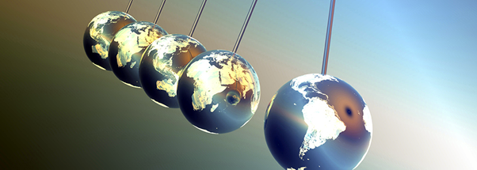
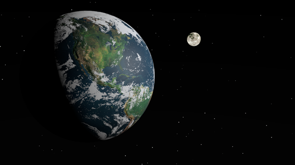
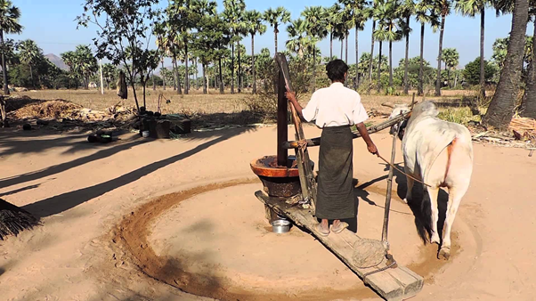
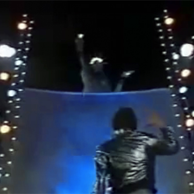
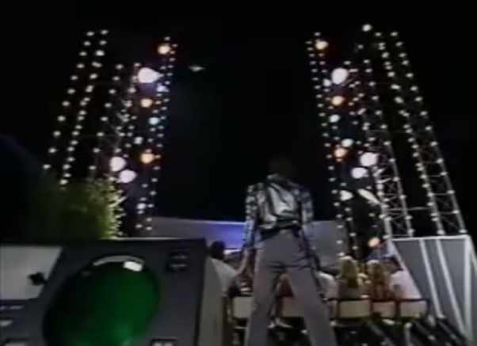
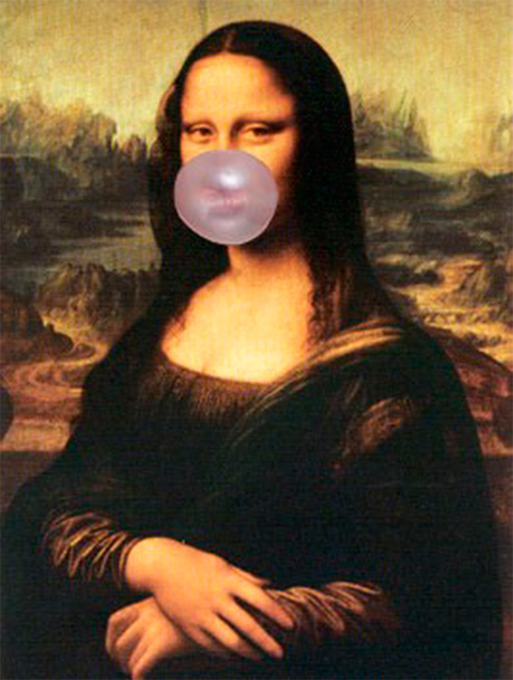

SAILING TO JAMBŪDVĪPA
The Rest of the Earth Is Not in Another Dimension
BY: MAYESVARA DASA
Mar 04, 2017 — IRELAND (SUN) —
The following is a response to Chaitanya dasa's article, "Explanation for the Globe and Flat Plane". Chaitanya Prabhu asked two questions in response to an article that we posted on Guru, GBC, and the Globe.
Caitanya Prabhu's two questions are as follows:
"Question 1: I would like to know if Mayesvara prabhu accepts the possibility that the Earth could be a globe to the external conditioned senses and a greater flat plane in the super reality. For instance, much as the Moon planet has heavenly buildings and heavenly beings living on it, unseen by material conditioned senses, or coming closer to Earth some persons detect and see ghosts and others never do. As most of the devotees accept the existence of different planes and dimensions, why is this not the explanation for the globe and flat plane, and does this not reconcile things nicely?
Question 2: Could it be that Mayesvara is interpreting the 5th canto and dogmatically reading texts without the knowledge to understand fully the reality behind them? I welcome the discussions on the topic. It's important for ISKCON to get things right, and crucial to our preaching."
Thank you Chaitanya Prabhu for the questions. Firstly, the Srimad Bhagavatam does not present the concept that Earth appears as globe to those with conditioned senses, and as a flat plane to those in the super reality, nor do the acharyas introduce such a concept. If that was the actual situation of the Earth, it would be described as such by Sukadeva Goswami and the acharyas following in disciplic succession. The stated purpose of the Srimad Bhagavatam is to distinguish reality from illusion for the benefit of all (SB 1.1.2) . The one and only Earth in Srimad Bhagavatam is described as a four billion mile diameter circular plane, hence the name Bhu-mandala. Bhu means Earth, and mandala means circle. We use the word mandala, for example, when referring to the Vraja mandala parikrama when devotees on pilgrimage rotate in a circular motion around the sacred places of Vrindavana. The word is also used to describe the circular formation (rasa-mandala) of Krishna's rasa dance. Rasa-mandala indicates the circular formation of the gopis as they dance with Krishna. The usage of the word mandala in Bhu-mandala again indicates the circular nature of the Earth. Interestingly, the Earth in Srimad Bhagavatam is described as the largest feature in the cosmos, spanning the entire center of the 4 billion mile diameter universe. Because of the vast size, one of the many names for Earth is Mahi which means 'the great.' The main inhabited area of Bhu-mandala is divided into seven islands (dwipas) and seven oceans covering an area of 202,800,000 miles. The central island of Bhu-mandala is called Jambudwipa. Bharata-varsha where we are located is in the southern part of Jambudwipa. The description is clear and unequivocal. Earth is one vast circular plane, and our area of Bharata-varsha is a small part of that great circular landscape. Earth is not otherwise described as an isolated globe in space, nor do the acharyas mention such a conception that the Earth appears as a globe to the external conditioned senses, and as greater flat plane in the super reality.
The atheists, and those otherwise conditioned by western secular science, will instantly dismiss this description of the Bhu-mandala as just some wild fantastic idea dreamed up by the primitives of ancient India who had no knowledge of the real Earth from the modern perspective of space-ships and satellites. Although members of the International Society for Krishna Consciousness generally accept the teachings of Srimad Bhagavatam as a factual description of reality, the description of Bhu-mandala is particularly challenging for those members that have resolute faith in the modern scientific version of the Earth as a globe in space, but who feel somewhat obliged to pledge their faith in Srimad Bhagavatam's description of Bhu-mandala. This dichotomy results in a mental condition called cognitive dissonance. The term is defined on Wikipedia's page as follows:
"In psychology, cognitive dissonance is the mental stress (discomfort) experienced by a person who simultaneously holds two or more contradictory beliefs, ideas, or values, when performing an action that contradicts those beliefs, ideas, and values; or when confronted with new information that contradicts existing beliefs, ideas, and values."
This cognitive dissonance is very much apparent in the representatives of the TOVP who are adamant in presenting the Earth as a globe despite the conspicuous absence of an Earth globe in any of the 18 Purana's section on cosmology. Srimad Bhagavatam's description of the physical Earth as a great circular plane has been conveniently explained away as being in 'another dimension.' This is a travesty of Srimad Bhagavatam that can't go uncontested. Srila Prabhupada taught that Srimad Bhagavatam is giving the perfect and objective description of the universe coming in disciplic succession from the creator of the universe, Krishna Himself:
"Your Majesty Maharaja Pariksit, know that all that I have described in reply to your proper inquiry is just according to the version of the Vedas, and it is eternal truth. This was described personally by Lord Krishna unto Brahma, with whom the Lord was satisfied upon being properly worshiped." (SB 2.2.32)
This Bhagavata Purana propounds the highest truth, which is understandable by those devotees who are fully pure in heart. The highest truth is reality distinguished from illusion for the welfare of all. Such truth uproots the threefold miseries." (SB 1.1.2)
The verse cited above (SB 1.1.2) states that Srimad Bhagavatam propounds the highest truth which is understandable by those devotees who are fully pure in heart. If one's motive is not pure, if one's position or reputation is more important than the truth, then one will not understand Srimad Bhagavatam. Lord Brahma says:
"Even great sages, if they are against Your transcendental topics, must rotate in this material world." (SB 3.9.10)
What does it mean to be against Your transcendental topics? The statement applies not only to those who are averse to hearing about the Lord, but also to those who hear the Srimad Bhagavatam but are averse to accepting it as the truth. Mayavadis, for example, study Srimad Bhagavatam, but do not accept the essential message that Krishna is the Supreme Personality of Godhead. To some degree we are all affected by envy, doubts, and speculations in this regard. One may hear the message of Srimad Bhagavatam, and profess faith by paying lip service, but without being committed to the truth of it in any substantial way. The description of the Earth in Srimad Bhagavatam is particularly challenging. The nature of the Earth (its form, size, and characteristics) is described in Srimad Bhagavatam's fifth canto, but who has the understanding, faith, and courage to accept it and present it as it is?
Envy of Krishna can manifest by presenting the Earth as we think it should appear, and not as it actually appears in the description provided in Srimad Bhagavatam. The disregard of Srimad Bhagavatam's description of the Earth may be a subconscious desire born of false ego to minimize Krishna, and exalt oneself (since we obviously know better than Krishna). It may also be born of the subconscious desire to keep oneself in maya. If it can be demonstrated that the Earth is not a globe in space, but rather a plane that continues into a greater Earth area (as described in Srimad Bhagavatam), then we may have to really start taking Krishna consciousness seriously. The discovery that Earth is not a globe would make things in our cozy world of illusion too unsettling. Better therefore to deny that Srimad Bhagavatam is making any such suggestion, and meanwhile go all-out to prove the existence of the globe by using all available scientific arguments. By maintaining the globe construct of reality, we can fool ourselves into believing that Bhu-mandala (the rest of the 4 billion diameter Earth plane) is in another dimension and has no tangible reality (at least to our sense perception). I can tell my duplicitous mind that Bhu-mandala may not exactly be mythical, but in practical terms it may as well be; because if the rest of the Earth plane is in another dimension, then I won't have to deal with any implications that will result from the otherwise paradigm-shifting discovery that Earth is not a globe. Thus, by denying any tangible reality to Bhu-mandala, I can subtly deny any tangible reality to the creator of Bhu-mandala (Krishna), and life in my happy world of maya goes on as before (with me in the center of it all!).
The shape and location of the Earth is an issue not just for the Mayapur Temple of Vedic Planetarium; it is an issue that affects us all. It is a very real challenge to our entire world-view. One may think the shape of the Earth is not an issue because one may feel no reason to disbelieve the various agencies that have convinced everyone that we on a small globular planet floating in space, and that the differences between the Vedic and modern conceptions of Earth can be reconciled in various ways. Sorry to spoil such a cozy world-view, but the shape and location of the Earth is certainly a big issue for followers of Srimad Bhagavatam. The Earth described by Srimad Bhagavatam and the Earth described by modern science are not the same thing. They are, in fact, two completely different conceptions of reality. They are not two different dimensions of reality. They are two different versions of reality. One is the reality (the Bhu-mandala of Srimad Bhagavatam) and one is the unreality (the globe of quasi-science and materialistic science). The description of Earth in Srimad Bhagavatam as a vast circular plane changes everything, and we have to be changed.
For those who don't want to be changed, various arguments are put forward in defense of the globe concept of reality. One may think that the description of the Earth as a globe in space is a minor detail in a vast universe that may have been overlooked in Srimad Bhagavatam; or perhaps a concept that was unknown in the Vedic age; or maybe a concept that was known but described in an obscure and esoteric manner that is difficult to decipher. However, the absence of a description of an Earth globe in Srimad Bhagavatam and in the commentaries by the acharyas is not due to a small omission on Sukadeva Goswami's part, or due to ignorance on the part of the acharyas who were writing before the age of so-called space exploration, or due to the use of esoteric knowledge that makes knowledge of the so-called Earth to remain hidden. There is no Earth globe described in the Vedas because there is no Earth globe in Krishna's creation. The Earth is as it is described in Srimad Bhagavatam – a great circle that expands across the center of the universe. This obviously has radical implications for the International Society for Krishna Consciousness in its understanding and presentation of the Earth to the rest of the world via the Mayapur Temple of Vedic Planetarium (TOVP). Our argument is that the TOVP have deviated from the original description of the Earth in Srimad Bhagavatam in order to compromise with the modern scientific (and non-Vedic) version of reality.
To justify the presence of an Earth globe in contemporary Vedic cosmology, devotees hope to bring in evidence of the Earth globe from other sources such as astronomical texts like Surya Siddhanta, or to introduce speculative concepts to argue that the Earth manifests as a globe in space to humans, and as a great circle to the demigods and sages who see things from a higher perspective, or 'super reality.' As we shall see below, Srimad Bhagavatam explains the super reality of the Earth to one and all – demigods as well as humans. The only reason why you think you see the Earth as a globe is because that is the only image of the Earth that has been presented to you; not because you've ever seen the assumed Earth globe with your own eyes. But is the image of the Earth globe a real image of the Earth? Our intention in writing these papers is to get the members of the International Society for Krishna Consciousness to question and investigate the authenticity of the supposed photographic evidence of the Earth globe from so-called space agencies, as well as the so-called science that supports the globe conception.
Some have dismissed the huge incongruity between Sukadeva Goswami's description of the Earth and our modern understanding as a non-issue. For some people that fact that the two descriptions do not match in any way is evidently not important, and they continue trying to assert that the Earth of Srimad Bhagavatam is a globe despite the self-evident description to the contrary. By presenting an argument that Sukadeva Goswami is describing a 'higher dimensional' perspective on the Earth, supporters of the globe hope to quickly dismiss the glaring fact that the two descriptions of the Earth have nothing whatsoever in common. The 'higher dimensional' argument states that due to our limited perception, the Earth appears to us humans as a globe. The demigods, by contrast, who are beings endowed with higher perception, perceive it as the great circular disc described by Sukadeva Goswami. This is really a very weak argument that offers no explanation why the Earth should suddenly manifest the form of a globe in space when the rest of Bhu-mandala is one continual flat landscape. I use the word flat here to mean a landscape that continues on a horizontal plane, as opposed to the idea of a landscape that curves into the form of a globe. The Earth obviously has high mountains, and low valleys, as well as depths on the ocean floor, but flat-Earth means that all of these features rest on a continual horizontal plane, and do not curve in the form of a ball-shaped planet that floats in dark space.
According to Srimad Bhagavatam, the massive Earth circle is not even floating in space, but is held up by Ananta-sesha. Why are the TOVP not considering this description when propagating the concept of the so-called Earth globe floating in space? The Earth in Srimad Bhagavatam is not described as floating. It is described as being held up by Ananta; and the Earth that he holds is a circular landscape that is four billion miles in diameter. There is no other concept of Earth in the Srimad Bhagavatam. According to the description of Srimad Bhagavatam, our own Earth area continues into other areas of the Bhu-mandala, and this great Earth circle continues to near the shell of the universe. Bharata-varsha is described as part of the flat Earth landscape and would remain flat even if the rest of the landscape was beyond our perception.
HOW ARE HUMANS MEANT TO PERCEIVE THE EARTH?
Srimad Bhagavatam explains that there are relative degrees of perception in regards to how we see the universe:
tan-mayaya mohita-buddhayas tv idam
vinirmitam catma-samam vicakshmahe
"And because all of us are bewildered by the illusory external energy of the Supreme Lord, we can see only this manifested cosmos according to our individual ability." (SB 2.6.37)
The statement that everyone sees the cosmos according to their individual ability does not imply that whatever anyone perceives to be true is necessarily a true perception based on one's relative angle of vision. The argument that the Earth manifests as a globe to humans with conditioned senses, and as a circular plane to those in higher consciousness such as rishis and demigods, is not supported by this verse. The verse is explaining that the intelligence of everyone is bewildered by the Lord's illusory energy tan-mayaya mohita-buddhayas tv idam. Therefore, if someone believes the Earth is a globe, we can question their belief: is that a true perception of the Earth, or is that perception a result of being bewildered by maya? Is the perception actually based on there being such a thing as a real Earth globe with sufficient evidence to support the idea, or is the whole Earth globe idea itself just a false construction of reality based on quasi-scientific ideas and false images presented by so-called space agencies?
If everyone in the universe is bewildered by maya, and we can only see the cosmos according to our individual ability, what then is the true feature of the Earth? How does the Earth actually look without any influence of maya creating a false conception of how it looks? For followers of the Vedas, the true objective feature of the Earth is that which is described in Srimad Bhagavatam. Srimad Bhagavatam is giving the perfect and objective description of the universe coming in disciplic succession from the creator of the universe, Krishna Himself:
"Your Majesty Maharaja Pariksit, know that all that I have described in reply to your proper inquiry is just according to the version of the Vedas, and it is eternal truth. This was described personally by Lord Krishna unto Brahma, with whom the Lord was satisfied upon being properly worshiped." (SB 2.2.32)
When we follow the description of the Earth (Bhu-mandala) given in Srimad Bhagavatam, the argument that Bhu-mandala is in another dimension, is not supported by the text itself, and makes no sense at all when we look at the details of what is being described, and to whom, and for whom, it is being described. Indeed, Srimad Bhagavatam is particularly intended for the fallen souls of Kali-yuga:
"This Bhagavata Purana is as brilliant as the sun, and it has arisen just after the departure of Lord Krishna to His own abode, accompanied by religion, knowledge, etc. Persons who have lost their vision due to the dense darkness of ignorance in the Age of Kali shall get light from this Purana." (SB 1.3.43)
The Srimad Bhagavatam is the literary incarnation of the absolute truth, and its appearance in the world naturally dispels all forms of ignorance, illusion, deception, and cheating that cover the vision of the human beings of Kali-yuga. This would also include removing the ignorance regarding the actual nature of the Earth that the humans live upon. The Srimad Bhagavatam was spoken to King Pariksit in reply to his question about the way of perfection and particularly for one about to die. Although Maharaja Pariksit is a maha-bhagavata, a great and exalted spiritual personality, he is nevertheless in the role of a human king. As a human being, he asked many questions to his guru Sukadeva Goswami about the perfection of life. One of these questions was how to 'perceive' the universal form of Krishna (SB 5.16.3). In reply, Sukadeva Goswami describes the 'names,' 'measurements,' and 'characteristics' (SB 5.16.4) of the prominent places in the universe with particular emphasis on the Bhu-mandala, or Earth plane. This description of how to perceive the Earth is meant for us humans in Kali-yuga. We don't require the body of a demigod to see the Earth. We can see the Earth 'through the eyes of scripture,' and understand clearly what is going on.
Listening to this description of the Earth and its relation to the other parts of the universe where the great saints and thinkers who had assembled from different parts of the universe:
"At that time all the great minds and thinkers, accompanied by their disciples, and sages who could verily sanctify a place of pilgrimage just by their presence, arrived there on the plea of making a pilgrim's journey. (SB 1.19.8)
From different parts of the universe there arrived great sages like Atri, Cyavana, Sharadvan, Aristanemi, Bhrgu, Vasistha, Parashara, Vishvamitra, Angira, Parashurama, Utathya, Indrapramada, Idhmavahu, Medhatithi, Devala, Arstishena, Bharadvaja, Gautama, Pippalada, Maitreya, Aurva, Kavasha, Kumbhayoni, Dvaipayana and the great personality Narada. (SB 1.19.9-10)
There were also many other saintly demigods, kings and special royal orders called arunadayas [a special rank of rajarshis] from different dynasties of sages. When they all assembled together to meet the Emperor [Pariksit], he received them properly and bowed his head to the ground." (Sb 1.19.11)
Demigods were also attentive to the great narration:
"Thus the King, Maharaja Pariksit, sat to fast until death. All the demigods of the higher planets praised the King's actions and in pleasure continually scattered flowers over the earth and beat celestial drums." (SB 1.19.18)
Here we learn that an assembly of humans, rishis, and demigods had assembled to hear the discourse between Sukadeva Goswami and Pariksit Maharaja. It is significant that Sukadeva Goswami gives one description of the Earth and its relation to the rest of the universe for the enlightenment of all, humans included. Indeed, not only is his description applicable for the humans, it is especially for the understanding of the humans who live during the present degraded age of Kali-yuga, the iron age of fighting and hypocrisy. Thus, although Sukadeva Goswami initially spoke Srimad Bhagavatam to a highly exalted audience of humans, sages, and demigods, it is by the mercy of Srimad Bhagavatam and the disciplic succession that humans in the age of Kali-yuga would also be able to understand and benefit from this great spiritual narration:
Let me offer my respectful obeisances unto him [Shuka], the spiritual master of all sages, the son of Vyasadeva, who, out of his great compassion for those gross materialists who struggle to cross over the darkest regions of material existence, spoke this most confidential supplement to the cream of Vedic knowledge, after having personally assimilated it by experience. (SB 1.2.3)
On the other hand, that literature which is full of descriptions of the transcendental glories of the name, fame, forms, pastimes, etc., of the unlimited Supreme Lord is a different creation, full of transcendental words directed toward bringing about a revolution in the impious livesof this world's misdirected civilization. Such transcendental literatures, even though imperfectly composed, are heard, sung and accepted by purified men who are thoroughly honest. (SB 1.5.11)
This Bhagavata Purana is as brilliant as the sun, and it has arisen just after the departure of Lord Krishna to His own abode, accompanied by religion, knowledge, etc. Persons who have lost their vision due to the dense darkness of ignorance in the Age of Kali shall get light from this Purana. (SB 1.3.43)
The Bhagavatam is the cream of all the Vedic literatures and is spoken for one and all - for the liberated, and those who will become liberated simply by receiving it's message. In other words, due to the great mercy of the disciplic succession, the 'gross materialists' are also getting the opportunity to hear the essence of all Vedic literature which includes, of course, the cosmology of the universe:
Sri Vyasadeva delivered it to his son, who is the most respected among the self-realized, after extracting the cream of all Vedic literatures and histories of the universe. (SB 1.3.41)
The Sanskrit words for this verse are: sarva — all; veda — Vedic literatures (books of knowledge); itihasanam — of all the histories; saram — cream; saram — cream; samuddhrtam — taken out.
Since Srimad Bhagavatam is the essence of all Vedic literature there is no need to garner an understanding of the Earth from more modern astronomical texts that are most likely contaminated by non-Vedic ideas. This is an important point to bear in mind because it is the cosmology of Srimad Bhagavatam which is to be presented in the TOVP, not some other book.
Srimad Bhagavatam is not only the essence of all Vedic literature, but it is meant for the ultimate good of all classes of people.
This Srimad-Bhagavatam is the literary incarnation of God, and it is compiled by Srila Vyasadeva, the incarnation of God. It is meant for the ultimate good of all people (lokasya) and it is all-successful, all-blissful and all-perfect. (SB 1.3.40)
Here the word lokasya (people) is used in the universal sense and means all living beings, demigod as well as human. Thus, the Temple of Mayapur Vedic Planeterium in which the Srimad Bhagavatam's cosmology is to be presented, is meant for the understanding of the common man. They are meant to hear about and understand the situation of the Earth as Sukadeva explained it to Pariksit Maharaja, the rishis, and demigods, five thousand years previously. The idea that the shape of the Earth manifests differently to the demigods and humans is a red herring thrown by those who are attached to the globe conception.
The argument that the shape of the Earth manifests differently to the demigods and the humans is easily refuted in the following verse. In response to Maharaja Pariksit's request to explain the details of the Bhu-mandala. Sukadeva Goswami replies:
The great rsi Sukadeva Gosvami said...O King, I shall nevertheless try to explain to you the principal regions, such as Bhuloka, with their names, forms, measurements and various symptoms. (SB 5.16.4)
Here the word 'form' (rupa) is specifically used: bhu-golaka-vishesham – the particular description of Bhuloka; nama-rupa – names and forms; mana – measurements; lakshanatah– according to symptoms; vyakhyasyamah - I shall try to explain.
Sukadeva Goswami clearly states that he will explain the 'form' of the Bhu-mandala as well as measurements and characteristics. If we have a description of the 'form' of something, it's measurements and characteristics, we have everything we need to get an image of the thing being described. The form and measurement of the Earth described by Sukadeva Goswami is unequivocally that of a great circle measuring four billion miles in diameter; not a globe measuring 8,000 miles in diameter. Who is Sukadeva Goswami explaining these details to? He is explaining to the great sages, demigods, as well as the humans who were also present in the assembly. He is explaining for the benefit of future generations of people in Kali-yuga who would get light from this Purana:
Let me offer my respectful obeisances unto him [Suka], the spiritual master of all sages, the son of Vyasadeva, who, out of his great compassion for those gross materialists who struggle to cross over the darkest regions of material existence, spoke this most confidential supplement to the cream of Vedic knowledge, after having personally assimilated it by experience. (SB 1.2.3)
Sukadeva Goswami has held a torchlight to the gross materialists so that we can see the things hidden away in darkness: dipam — torchlight; atititirshatam — desiring to overcome; tamah andham — deeply dark material existence; samsarinam — of the materialistic men.
Thus we don't need to speculate about the nature of the Earth. The description is very clear, and the form of Bhu-mandala can be easily depicted according to the description. The idea that the shape of the Earth manifests differently to the Demigods and humans is a red herring. Sukadeva gives one objective description of the Bhu-gola ("name, form, measurements, and characteristics"). This is a description that even the 'impious' 'gross materialists' of Kali-yuga can understand, if it is presented without adulteration by a person with realization (or at least conviction) of the thing being described.
In regards to the shape of the Earth, it's not a question of relative perception that makes the Earth appear as a great circular plane to the demigods, and as a globe to the humans (as some are trying to argue). It is a question of deception, not perception that people think they see the Earth as a globe when they don't. We all factually experience Earth as a continual horizontal plane. We have been simply hypnotized and indoctrinated into believing the globe image as factual.

The idea that the humans perceive the Earth as a globe is not on account of there being any such thing as a real Earth globe; rather, it is because the humans have been misled for the last few hundred years about the shape and location of the Earth. We have been presented false science and false images of the Earth. People only think they've seen the Earth as a globe because of the images presented by NASA, but in actual fact none of us have seen a globe shaped Earth with our own eyes. What member of ISKCON, for example, has ever been into outer space and experienced the Earth as a globe?
To the demigods, Earth appears as the vast circular landscape described by Sukadeva Goswami because they are situated in true knowledge (sattva) which brings about accurate perception. It is not that the demigods see the Earth as a different shape from the humans, its just that they are entitled to see more of it than we do. The demigods (Surya, Vayu, Agni, Yama, etc) are practically omnipresent due to the nature of their service, and thus observe the living entities in every nook and cranny of the universe:
"The sun, fire, sky, air, demigods, moon, evening, day, night, directions, water, land and Supersoul Himself all witness the activities of the living entity." (SB 6.1.42)
Obviously the demigods must be familiar with how the Earth looks since they observe all the living entities in their various environments throughout the universe. If the universe is as Sukadeva describes it, then the demigods must see it in the manner described. They can see, for example, the continents of our Earth area (in Bharata-varsha) in relation to the rest of Jambudwipa, We are presently restricted from going beyond parts of Arctic and Antarctica, and that is why we can't see it – not because it is invisible or in another dimension.
In conclusion, it is not because Sukadeva Goswami is describing a 'higher dimensional' Earth that we fail to see the comparison between his description and the modern Earth globe; there is no comparison because there is no Earth globe! Prior to the modern age, everyone believed the Earth was flat because that is true perception. By re-presenting it's true form and extent, Srimad Bhagavatam is dispelling the ignorance and deception presented by speculators, so called scientists, and asuric agencies like NASA about the shape of the Earth. By accepting Sukadeva Goswami's literal description of the Earth plane, one will see through the falsity of the Earth globe conception. By following Sukadeva Goswami's description, we have a scientific presentation by which we can 'know' and clearly distinguish the Vedic Earth from the false Earth conception that has fooled the world for the last five hundred years, and particularly in the modern era with supposed astro-NOTS in space taking snapshots of the Earth globe below. By keeping faith in Sukadeva Goswami's description, the fantastic deception of the Earth globe will be become gradually and evidently clear. Otherwise, one will be subject to misconceptions in trying to reconcile Sukadeva Goswami's description with that presented by non-Vedic sources.
DISTANT PLACES ARE NOT 'OTHER DIMENSIONS'
In his description of the universal form, Sukadeva Goswami plainly describes the characteristics of various places throughout the universe, and their distances from one another. There is no indication that Sukadeva Goswami is referring to things in 'other dimensions.' I find this concept of 'other dimensions' is brandished around in discussions of Vedic cosmology without consideration of the Srimad Bhagavatam's simple and straightforward presentation of 'dimensions' as the measurable distance between different areas within this one enclosed and measurable universe. In this paper I use the word dimension in the dictionary sense as 'a measurable extent of a particular kind, such as length, breadth, depth, or height.' Sukadeva Goswami describes the measurements and directions from one place in the universe to another. In this sense there is one dimension or plane of existence throughout the universe. Some places are to the north, south, east, or west of each other, and other places are above and below each other. By referring to these measurements we can calculate distances from our own area to the rest of the Earth circle. Sukadeva Goswami describes the direction, location, and measurements of other places on the greater Earth plane, as well as to places above and below the Earth's surface. None of these places are in 'another dimension.' They are all situated at a measurable distance from our own Earth area. Otherwise, what would be the use in Sukadeva Goswami providing the direction and distance to something which is in another dimension? The suggestion is meaningless and ridiculous.
The concept of 'other dimensions' has arisen simply because members of ISKCON writing on the subject of cosmology have automatically assumed the Earth is a globe as seen in the photos provided by NASA. In these images we obviously don't see the Earth as the great Earth circle described in Srimad Bhagavatam. Rather than investigating to see if these visual images of the Earth are real, the default explanation is to say that Bhu-mandala must be in 'another dimension,' and that's why we don't perceive it. The prominent devotees writing on this subject such as Sadaputa dasa and Danavir Goswami never seriously questioned or investigated whether the whole globe paradigm is real or not; nor did they make any presentation questioning the authenticity of such visual images from so-called outer space. They just assumed the Earth globe as a given fact, and that Bhu-mandala is beyond our sense perception. The exhibitions in the TOVP featuring the globe Earth will be based mainly on the work of these two devotees, but without any critique or any investigation into the validity and authenticity of the science supporting their globe model. This is another major point to consider. We can otherwise extend our sincere appreciation to these devotees for all their ground-breaking work.
In any case, because something is not perceivable to the senses doesn't make it in another dimension. It just means we can't perceive it. There are many reasons why one can't perceive another thing, and it has nothing to do with the thing being in another dimension. From the perspective of Srimad Bhagavatam, the obvious reason why we don't perceive Bhu-mandala in the photos and videos of Earth provided by space agencies is because the images are fake. The image below, for example shows a computer generated image (CGI) of the assumed Earth globe with the moon in the back ground:

The reason why it is a CGI is because no real image of the Earth from this vantage exists. A little investigation into the subject will quickly reveal the stupendous deception that is taking place. Try finding, for example, a real video image of the Earth rotating on its axis taken from a so-called satellite in outer space. You will not find such a video. The most you will find are computer animated models of the Earth rotating in space. The joke is that the TOVP will have to use similar computer animated images of the so-called globe in their exhibitions, because no real video of the so-called Earth globe rotating in space actually exits. Exposure of this space-age hoax is on-going, and I humbly request the reader to do some real research into the subject. The obvious conclusion why we don't see Bhu-mandala in such fake images is because NASA and other space agencies are not capable of going into outer-space in order to photograph the vast extent of the Earth circle from this vantage.
The resort to the term 'other dimensions,' simply mystifies and obfuscates the description of the Earth which is otherwise explained in a straightforward manner. We do not require to take any fanciful meaning of Earth's relationship to Jambudvipa; nor is Srimad-Bhagavatam'sdescription of the relationship beyond our visualization or comprehension. If I hear England described as an island 20 miles off the mainland coast of Europe, I just accept the description as it is. I don't need to resort to the idea of a parallel universe to conceptualize the relationship of England to Europe, nor to find my way. If one wants to go to Europe from England, for example, one could take a train and cross under the sea using the Euro-tunnel, or one could take a boat and sail upon the sea, or one could take an airplane and fly over the sea. Or, one could simply astral travel if they had developed some mystic siddhi. However, whatever the mode of transport, one is still crossing the same distance, only in a shorter or longer time. The distances are commonly recognized units of measurement that are relatively traversed by faster or slower modes of transport whether they be gross (machines) or subtle (mystic power). In the same way, Sukadeva Goswami uses universally recognized units of measurement, direction, and dimension, by which a person in Bharata-varsha can calculate the distance and direction to other places on the Bhu-mandala, to the subterranean worlds below the surface of Bhu-mandala, and to the planets and stars above the surface of Bhu-mandala. The unit of measurement used by Sukadeva Goswami is yojanas and this is the same standard of measurement used by one and all throughout the universe:
"So Sukadeva Gosvami has described all the planetary system, where and how they are situated, how many miles they are different from one another. The calculation of the whole universe is made there. The diameter is described: four billion miles up and down, this way and that. And where is the sun is situated and how far above the sun the moon is situated, how far above the moon the Mars, Jupiter—everything is clearly described. And where the hellish planets are situated, and how in the hellish planets different sinful men are suffering." (SB 6.1.7, Honolulu, June 15 1975)
Since Sukadeva Goswami is giving the objective description of the names, forms, measurements, and characteristics of the universe, the measurements of the universe are the same for Brahma on his swan carrier, as they are for the man on his Rickshaw, but the difference is that Brahma is not restricted in the same way in his mode of seeing or hearing over these long distances, or in traversing those distances (see section on yogic perfections below).
It is not because Sukadeva Goswami is describing a 'higher dimensional' Earth that we fail to see the comparison between his description and the modern Earth globe; there is no comparison because there is no Earth globe! The idea that Sukadeva Goswami is presenting a higher dimensional view of the Earth (something perceptible to demigods, but not human beings) is not supported by anything in the text itself. By accepting Sukadeva Goswami's literal description of the Earth plane, one will see through the falsity of the Earth globe conception. By following Sukadeva Goswami's description, we have a scientific presentation by which we can 'know' and clearly distinguish the Vedic Earth from the pretender Earth that has fooled the world for the last five hundred years, and particularly in the modern era with supposed astro-NOTS in space taking snapshots of the Earth globe below. By keeping faith in Sukadeva Goswami's description, the fantastic deception of the Earth globe will be become gradually and evidently clear. Otherwise, one will be subject to misconceptions and deceptions in trying to reconcile Sukadeva Goswami's description with that presented by non-Vedic sources.
'OTHER DIMENSIONS' AND MYSTIC POWERS
In the 11th canto of Srimad Bhagavatam, Krishna describes various mystic powers that can be attained by certain procedures:
"Among the eight primary mystic perfections, the three by which one transforms one's own body are anima, becoming smaller than the smallest; mahima, becoming greater than the greatest; and laghima, becoming lighter than the lightest. Through the perfection of prapti one acquires whatever one desires, and through prakamya-siddhi one experiences any enjoyable object, either in this world or the next. Through ishita-siddhi one can manipulate the sub-potencies of maya, and through the controlling potency called vashita-siddhi one is unimpeded by the three modes of nature. One who has acquired kamavasayita-siddhi can obtain anything from anywhere, to the highest possible limit. My dear gentle Uddhava, these eight mystic perfections are considered to be naturally existing and un-excelled within this world." (SB 11.15.4-5)
The ten secondary mystic perfections arising from the modes of nature are the powers of freeing oneself from hunger and thirst and other bodily disturbances, hearing and seeing things far away, moving the body at the speed of the mind, assuming any form one desires, entering the bodies of others, dying when one desires, witnessing the pastimes between the demigods and the celestial girls called Apsaras, completely executing one's determination and giving orders whose fulfillment is unimpeded." (11.15.6-7)
Here Krishna mentions a mystic siddhi called manah-javah—moving the body at the speed of the mind. This appears to be the siddhi that Yudhisthira imparted to Arjuna by which he was able to traverse hundreds of thousands of mile on his journey from Bharata-varsha into the mainland of Jambudwipa. The following history is narrated in the Vana Parva of Mahabharata:
"Vaisampayana said, "After some time, Yudhishthira the just, remembering the command of the Muni (Vyasa) and calling unto himself that bull among men--Arjuna--possessed of great wisdom, addressed him in private. Taking hold of Arjuna's hands, with a smiling face and in gentle accents, that chastiser of foes--the virtuous Yudhishthira--apparently after reflecting for a moment, spake these words in private unto Dhananjaya, 'O Bharata, the whole science of arms dwelleth in Bhishma, and Drona, and Kripa, and Karna, and Drona's son. They fully know all sorts of Brahma and celestial and human and Vayavya weapons, together with the modes of using and warding them off. All of them are conciliated and honoured and gratified by Dhritarashtra's son who behaveth unto them as one should behave unto his preceptor. Towards all his warriors Dhritarashtra's son behaveth with great affection; and all the chiefs honoured and gratified by him, seek his good in return. Thus honoured by him, they will not fail to put forth their might. The whole earth, besides, is now under Duryodhana's sway, with all the villages and towns, O son of Pritha, and all the seas and woods and mines! Thou alone art our sole refuge. On thee resteth a great burden. I shall, therefore, O chastiser of all foes, tell thee what thou art to do now. I have obtained a science from Krishna Dwaipayana. Used by thee, that science will expose the whole universe to thee. O child, attentively receive thou that science from me, and in due time (by its aid) attain thou the grace of the celestials. And, O bull of the Bharata race, devote thyself to fierce asceticism. Armed with the bow and sword, and cased in mail, betake thyself to austerities and good vows, and go thou northwards, O child, without giving way to anybody. O Dhananjaya, all celestial weapons are with Indra. The celestials, from fear of Vritra, imparted at the time all their might to Sakra. Gathered together in one place, thou wilt obtain all weapons. Go thou unto Sakra, he will give thee all his weapons. Taking the bow set thou out this very day in order to behold Purandara."
Vaisampayana continued, "Having said this, the exalted Yudhishthira the just, imparted that science unto Arjuna...
...The strong-armed son of Pandu then, having walked round his brothers and round Dhaumya also, and taking up his handsome bow, set out. And all creatures began to leave the way that Arjuna of great energy and prowess, urged by the desire of beholding Indra, took. And that slayer of foes passed over many mountains inhabited by ascetics, and then reached the sacred Himavat, the resort of the celestials. And the high-souled one reached the sacred mountain in one day, for like the winds he was gifted with the speed of the mind, in consequence of his ascetic austerities. And having crossed the Himavat, as also the Gandhamadana, he passed over many uneven and dangerous spots, walking night and day without fatigue. And having reached Indrakila, Dhananjaya stopped for a moment. And then he heard a voice in the skies, saying, 'Stop!'".
The history recounted here is that by use of a mystic siddhi, Arjuna was able to quickly and easily traverse the journey to Gandhamadana Mountain in Jambudwipa, and eventually go to Indraloka. The distance to Gandhamadana Mountain in Jambudwipa is some hundreds of thousands of miles along the Earth plane. The point to take here is that Arjuna did not enter another dimension, he was just able to traverse a measurable distance over the vast Earth plane by use of a mystic power by which he could travel at the speed of mind.
Another siddhi mentioned by Krishna in the verse above is dura-shravana-darshanam seeing and hearing things far away (dura—things very far away; shravana—hearing; darshanam—and seeing). This is not referring to seeing things in another dimension. It is referring to seeing things over a commonly recognized distance. For example, in Mahabharata, when Lomasa Muni brought the Pandavas on pilgrimage to Jambudwipa, the following event is narrated:
"Yudhishthira said, 'O Lomasa, how great must be the force of a pious deed! Having taken my bath at this spot in a proper form, I seem to touch no more the region inhabited by mortal men! O saint of a virtuous life, I am beholding all the regions. And this is the noise of the magnanimous dwellers of the wood, who are reciting their audible prayers.'
Lomasa said, 'O Yudhishthira, the place whence this noise comes and reaches thy ears is at the distance of three hundred thousand yojanas, to be sure. O lord of men, rest thou quiet and utter no word. O king, this is the divine forest of the Self-existent One, which hath now come to our view." (Mahabharata Vana Parva, Tirtha Yatra Parva Section, CXIV translated by Kisari Mohan Ganguli)
Here it mentions that Yudhisthira Maharaja was able to see and hear an area of the universe that was three hundred thousand yojanas away. Yudhisthira was not seeing things in another dimension, but simply seeing another part of the universe that was very far away, and beyond the normal range of human eye sight.
Another mystic power mentioned by Krishna is para-kaya-praveshanam, the ability to enter the bodies of others (para-kaya—the bodies of others; praveshanam—entering). Narrations regarding this power are mentioned on a number of occassions in Mahabharata and also Srimad Bhagavatam. On the occasion of Diti conceiving a child for the purpose of killing Indra, Indra was able to utilize this mystic power to enter her womb with the intention of killing the child:
Finding this fault, Indra, who has all the mystic powers [the yoga-siddhis such as anima and laghima], entered Diti's womb while she was unconscious, being fast asleep. (SB 6.18.61)
After entering Diti's womb, Indra, with the help of his thunderbolt, cut into seven pieces her embryo, which appeared like glowing gold. In seven places, seven different living beings began crying. Indra told them, "Do not cry," and then he cut each of them into seven pieces again. (SB 6.18.62)
Verse 6.18.61 mentions that Indra is yoga-ishah a master of yoga endowed with the mystic powers of yoga-maya. In Srila Prabhupada's purport to this verse he says:
"A perfectly successful yogi is expert in eight kinds of perfection. By one of them, called anima-siddhi, he can become smaller than an atom, and in that state he can enter anywhere. With this yogic power, Indra entered the womb of Diti while she was pregnant."
Everything in the universe is made of a certain measurable space or dimension (literally the measurement of a thing, and the distance between one thing and another). The ability to enter the space (dimension) of others and not be visible, (such as the ability of Indra to enter without detection into the body of Diti) is due to the use of mystic siddhis, and not due to the concept of beings coming in and out of 'other dimensions.' Indra is not in another dimension to our own. He is simply in another place that we don't have access to. Likewise the inability to enter or perceive the other parts of the Earth plane, is due to lack of qualification and authorization to go to these places, not because they are in another dimension.
All the areas described in Jambudwipa are at a certain measurable and physical distance from where we are in Bharata-varsha, and they are part of the same Earth plane. The Arctic and Antarctica regions, for example, are located at a certain distance from other areas on the Earth, but they are obviously not in another dimension. Likewise, the lands beyond Arctic and Antarctica that are described in Srimad Bhagavatam as belonging to the rest of Jambudwipa are just a further distance away, and are not in another dimension. These areas are presently inaccessible, but that doesn't make them in another dimension. Underground military bases, for example, are inaccessible to the general public, but they are not in another dimension. According to this definition of dimension, things can be invisible to our perception, but not necessarily in another dimension. They can be imperceptible simply because of being too far away, or inaccessible, or camouflaged, or a number of other reasons.
An explanation for the visibility and invisibility of people and places within the universe has less to do with the concept of 'other dimensions,' and more to do with one's punya to travel to other places, or to achievements in mystic perfections that enable one to see and experience various phenomena throughout the universe.
GHOSTS, THE MOON CHARIOT, AND OTHER DIMENSIONS
Chaitanya Prabhu presented the example of ghosts (living beings whose subtle bodies are beyond our sensory perception), as a comparable example to the idea that Bhu-mandala may likewise be beyond our sense perception. However, a ghost in a room is not in another dimension; the ghost is in the same dimension, but merely invisible to the eyes. The presence of a ghost in one's room (dimension) can be felt in other ways such as items being flung around the house. The entrance of a ghost into another's body can be perceived by symptoms of possession. Lord Rsabhadeva says that ghosts are superior to human beings, meaning they can do things that embodied humans cannot do: manushyah pramathas tato 'pi 'ghosts are superior to human beings' (SB 5.5.21) . Ghosts also have their own realm within this universe which is above the surface of the Earth by a measurable distance (SB 5.24.5-6) . Srila Prabhupada explains that ghosts do not have a gross material body made of five gross material elements. They have a body made of the three subtle elements, mind, intelligence, and false ego:
"Sometimes due to sinful activities, too much attachment, a man becomes ghost. Ghost, there is ghosts. Bhuta preta pishaca. Not only this life, demonic life, but after death also, there are ghostly lives. They do not get this gross body. They remain in the subtle body, mind, intelligence, and ego. Due to their gross sinful life, they are punished by not getting a gross life." (Bg 1.41-42, London, July 29 1973)
Ghost means he does not get this material body. He remains in the subtle body, mind, intelligence. Therefore ghost can go because he is in the mind. Mind speed is very strong. If you have got this material body, you cannot go immediately hundred miles off. But if you are in the mental body, you can go immediately, thousand miles immediately, within a second. So the ghost, they can play something wonderful because... But they are not happy because they have no gross body." (SB 3.26.27 Bombay, January 4 1975)
Obviously, since the ghost body is not made of the five gross elements (including the earth element) then it would not be perceptible to our ordinary vision. Bhu-mandala, however, is not described as subtle energy. Bhu-mandala is the Earth. Earth is the grossest of the material elements, not the most subtle. The rest of Bhu-mandala is as real and solid as our own part of the Earth area. There are many words for invisible and subtle in Srimad Bhagavatam, but these are not used in relation to the Bhu-mandala. It is never described as being invisible. Queen Kunti, for example, said to Krishna:
"Srimati Kunti said: O Krishna, I offer my obeisances unto You because You are the original personality and are unaffected by the qualities of the material world. You are existing both within and without everything, yet You are invisible to all." (SB 1.8.17)
Here the word for invisible is alakshyam. Kunti makes the point that although Krishna is present everywhere, by His mystic potency He remains invisible to our perception. There are many instances in Srimad Bhagavatam where similar words are used to describe things that are subtle, invisible, or beyond our perception. These words are never used in relation to Jambudwipa and the rest of Bhu-mandala. Bhu-mandala is comprised of the Earth element which is the grossest of material elements and certainly not subtle or invisible. Sukadeva Goswami provides measurements from which we can work out the distance from Bharata-varsha to other parts of Jambudwipa. Why would he provide measurements and distances unless he means to inform us of a greater Earth around our own small area? How can you give directions and distance to something which is in another dimension? The idea makes no sense at all. Jambudwipa is in the northern direction and the closest area cannot be more than a few thousand miles away.
Chaitanya Prabhu gave a second example of imperceptibility in the case of the chariots of the sun and moon. Certainly the devas and their chariots are invisible to our perception, but that does not make them in another dimension. The distance and altitude of the sun and moon from the Earth are given in Srimad Bhagavatam, and they obviously fill a measurable portion of the universe. They are part of the 'physicality' of the universe and are not in another dimension. In the following conversation, Srila Prabhupada also rejects the idea that the bodies on the moon are subtle:
Harikesha: Like the moon planet is heavenly planet. They're supposed to have subtle bodies there. So would there be any gross forms?
Prabhupada: Why subtle body? That is material body.
Harikesha: So we would not be able to see any traces of a civilization?
Prabhupada: There is civilization. You have not gone there, rascal. You are simply imagining. (Devotees laugh) There is civilization. First thing is, you rascal, you did not go. You are talking only nonsense. That's it. (Morning Walk, June 2 1975, Honolulu)
Why the devas of the sun and moon are not visible to our perception is another question. It is a question that globe advocates need to answer as well as those who promote the flat Earth concept. In any case, the invisibility of the sun and moon chariots does not make the Earth round, and Jambudwipa in another dimension. The conclusion does not follow from the premise. First of all, it can be clearly established that American astro-NOTS have never been to the moon to see the nature of life there. Secondly we still have to establish whether the Earth is a globe or not (not simply assume it as a given fact). Thirdly, there is no reason to assume that Jambudwipa is another dimension since it is a part of this Earth. The expression 'another dimension' is really referring to something of the transcendental world, not something of this world which is described using commonly recognized notions of direction, distance, and substance (earth, water, fire, air, ether, etc.).
The modes of nature certainly create environments or types of bodies that appear gross or subtle, but everything that exists occupies its own space within this one enclosed and measurable universe. Srimad Bhagavatam informs the reader (here in this part of the Earth) of a greater Earth that literally surrounds us in every direction. We can't see it because we don't have the qualification to go there, not because it is in another dimension, or because it is too subtle for our perception. To say, Bhu-mandala is another dimension is equivalent to saying that it doesn't occupy a physical space. According to the description there is more land surrounding us land that obviously occupies space. Jambudwipa, for example, is described as having a measurement of 800,000 miles in length and breadth. The continents of our Earth in the Bharata-varsha area make up a very small part of that over-all area. Surrounding Jambudwipa is the salt-water ocean measuring a further 800,000 miles. Surrounding the great salt-water ocean is the island of Plakshadwipa which measures 1,600,000 miles. In this way the seven islands and oceans of Bhu-mandala expand in the unique formation of concentric circles to a distance of 202,800,000 miles. All of this takes up measurable space. Bhu-mandala is filled with land (earth) that people walk on, and oceans that people sail upon. Just as the sun and moon have a certain size and take up a certain space, so these other regions of the Earth take up a certain space. They are not in another dimension. They are in this dimension.
One can read about these other parts of the Earth in Srimad Bhagavatam just as one can read about foreign lands in holiday brochures. To go on holiday or to move to another land requires a certain qualification in the form of money, visa, passport, etc. Likewise to go to Jambudwipa or any other part of Bhu-mandala, one has to perform yajna and gain the necessary qualification. There is nothing mysterious or 'other-dimensional' in this description of a greater Earth area.
The realms of Jambudwipa being comprised predominately of the earth element would be accessible to mundane sense perception. We can't perceive them because we are not allowed to go there. If we were allowed to go there, we would perceive them as they are part of the gross material 'earth' level. I can't perceive New York right now because I don't have the qualification to go there. If I had the necessary visa, passport, green card, and a lot of money, then I could go and see New York. Likewise, if we were allowed access, we could go and see Jambudwipa. Karma, however, keeps conditioned souls within a particular jurisdiction. NASA is trying to hoodwink everyone that they are travelling around space, when they are bound by karma like everyone else. Srila Prabhupada gives the example of an animal tied to a rope that goes around in circles within a limited confine. The reason why we don't enter into other lands beyond the Arctic and Antarctica is because other forces prevent us from going there. Although historical narrations in Mahabharata and Srimad Bhagavatam inform us that movement between Bharata-varsha and the greater Earth area was once possible, now in the era of Kali-yuga, movement into these other areas, and even movement vertically into space is restricted to a certain confine. The reason, therefore, why we don't see Jambudwipa in satellite images from outer space is because there are no satellites in outer space that can see over such a vast distance. The images of the Earth that we are looking at are obviously computer generated images (CGI's) and not real photos. The world has been duped.
SATTVA-GUNA AND 'OTHER DIMENSIONS.'
Jambudwipa is part of the Earth and is made of the gross Earth element. The quality of sattva-guna (the mode of goodness) is certainly higher in the other varshas of Jambudwipa as they are referred to as bhaumani svarga-padani (SB 5.17.11) or heavens on Earth. However, the higher level of sattva-guna does not make these areas more subtle; it only makes them more delightful, pristine, and beautiful.
"Among the nine varshas, the tract of land known as Bharata-varsha is understood to be the field of fruitive activities. Learned scholars and saintly persons declare the other eight varshas to be meant for very highly elevated pious persons. After returning from the heavenly planets, they enjoy the remaining results of their pious activities in these eight earthly varshas (SB 5.17.11)
PURPORT: The heavenly places of enjoyment are divided into three groups: the celestial heavenly planets, the heavenly places on earth, and the bila heavenly places, which are found in the lower regions. Among these three classes of heavenly places (bhauma-svarga-pada-ni), the heavenly places on earth are the eight varshas other than Bharata-varsha. In Bhagavad-gita (9.21) Krishna says, ksine punye martya-lokam vishanti: when the persons living in the heavenly planets exhaust the results of their pious activities, they return to this earth. In this way, they are elevated to the heavenly planets, and then they again fall to the earthly planets."
It mentions here that Bharata-varsha is the place where karma is made. The karma accrued in Bharata-varsha decides one's future birth somewhere in the universe. Bharata-varsha is elsewhere mentioned as a special and unique place where love of God, or liberation from the cycle of birth and death can be most easily achieved. The other eight varshas of Jambudwipa are for those living entities who return to the Earth plane from the heavenly planets, and who enjoy the remaining results of their pious activities in these eight earthly varshas. In order to go the celestial realm or heavenly realms to begin with one has to be extremely pious:
"Vaisampayana said, "And the city of Indra which Arjuna saw was delightful and was the resort of Siddhas and Charanas. And it was adorned with the flowers of every season, and with sacred trees of all kinds. And he beheld also celestial gardens called Nandana--the favourite resort of Apsaras. And fanned by the fragrant breezes charged with the farina of sweet-scented flowers, the trees with their lord of celestial blossoms seemed to welcome him amongst them. And the region was such that none could behold it who had not gone through ascetic austerities, or who had not poured libations on fire. It was a region for the virtuous alone, and not for those who had turned their back on the field of battle. And none were competent to see it who had not performed sacrifices or observed rigid vows, or who were without a knowledge of the Vedas, or who had not bathed in sacred waters, or who were not distinguished for sacrifices and gifts. And none were competent to see it who were disturbers of sacrifices, or who were low, or who drank intoxicating liquors, or who were violators of their preceptors' bed, or who were eaters of (unsanctified) meat, or who were wicked. And having beheld those celestial gardens resounding with celestial music, the strong-armed son of Pandu entered the favourite city of Indra. And he beheld there celestial cars by thousands, capable of going everywhere at will, stationed in proper places. And he saw tens of thousands of such cars moving in every direction. And fanned by pleasant breezes charged with the perfumes of flowers, the son of Pandu was praised by Apsaras and Gandharvas. And the celestials then, accompanied by the Gandharvas and Siddhas and great Rishis, cheerfully reverenced Pritha's son of white deeds. Benedictions were poured upon him, accompanied by the sounds of celestial music." (Mahabharata, Vana Parva XLIII translated by Kisari Mohan Ganguli)
Srimad Bhagavatam also mentions the qualifications to enter Indra's city:
"No one who was sinful, envious, violent toward other living entities, cunning, falsely proud, lusty or greedy could enter that city. The people who lived there were all devoid of these faults". (SB 8.15.22)
After exhausting one's qualification to remain in Svarga (the heavenly realm), one falls back to the Earth plane, but one is first allowed to enjoy the remainder of one's good karma in the eight varshas of Jambudwipa that are the equivalent of heaven on earth: anyany asta varshani svarginam punya-sheshopabhoga-sthanani bhaumani svarga-padani vyapadishanti."Learned scholars and saintly persons declare the other eight varshas to be meant for very highly elevated pious persons. After returning from the heavenly planets, they enjoy the remaining results of their pious activities in these eight earthly varshas" (SB 5.17.11) . Thus it requires the punya (merit, virtue, auspiciousness, purity, etc.) born of yajna (Vedic sacrifice) to go Jambudwipa, not that one can easily go there in a 747 or a sailing ship. We previously wrote a book on the subject called Sailing to Jambudwipa. The idea of the title was to emphasize the close proximity of our Earth area to the greater Earth area. Although these areas are connected by the salt-water ocean surrounding Jambudwipa, one can't just easily sail or fly willy-nilly into Jambudwipa. Entrance into Jambudwipa requires punya or piety which comes from performance of Vedic sacrifices (yajna). Again, this does not make Jambudwipa in another dimension. It just means that movement to and fro from this place is restricted. One's attempt to enter these places by mechanical means will be blocked and thwarted as the living entities can only move according to their karma under the superior control of Krishna:
ishvarah sarva-bhutanam hrd-deshe 'rjuna tisthati
bhramayan sarva-bhatani yantrarudhani mayaya
The Supreme Lord is situated in everyone's heart, O Arjuna, and is directing the wanderings of all living entities, who are seated as on a machine, made of the material energy.
Lord Brahma says that the materialists make troublesome and extensive plans to conquer nature, but are frustrated in all their various plans by supernatural power (daivahatartha-racana, SB 3.9.10). In any case, the desire to go to these places by either Vedic yajna, or mechanical machines, is not recommended in Srimad Bhagavatam
"The way of presentation of the Vedic sounds is so bewildering that it directs the intelligence of the people to meaningless things like the heavenly kingdoms. The conditioned souls hover in dreams of such heavenly illusory pleasures, but actually they do not relish any tangible happiness in such places. (SB 2.2.2)
Purport: The conditioned soul is always engaged in laying out plans for happiness within the material world, even up to the end of the universal limit. He is not even satisfied with available amenities on this planet earth, where he has exploited the resources of nature to the best of his ability. He wants to go to the moon or the planet Venus to exploit resources there. But the Lord has warned us in the Bhagavad-gita (8.16) about the worthlessness of all the innumerable planets of this universe, as well as those planets within other systems. There are innumerable universes and also innumerable planets in each of them. But none of them is immune to the chief miseries of material existence, namely the pangs of birth, the pangs of death, the pangs of old age and the pangs of disease. The Lord says that even the topmost planet, known as the Brahmaloka or Satyaloka, (and what to speak of other planets, like the heavenly planets) is not a happy land for residential purposes, due to the presence of material pangs, as above mentioned. Conditioned souls are strictly under the laws of fruitive activities, and as such they sometimes go up to Brahmaloka and again come down to Patalaloka, as if they were unintelligent children on a merry-go-round. The real happiness is in the kingdom of God, where no one has to undergo the pangs of material existence. Therefore, the Vedic ways of fruitive activities for the living entities are misleading. One thinks of a superior way of life in this country or that, or on this planet or another, but nowhere in the material world can he fulfill his real desire of life, namely eternal life, full intelligence and complete bliss. Indirectly, Srila Sukadeva Gosvami affirms that Maharaja Pariksit, in the last stage of life, should not desire to transfer himself to the so-called heavenly planets, but should prepare himself for going back home, back to Godhead. None of the material planets, nor the amenities available there for living conditions, is everlasting; therefore one must have a factual reluctance to enjoy such temporary happiness as they afford."
In the purport above, Srila Prabhupada refers to the other varshas of Jambudwipa as 'heavenly planets.' In reality they are part of the Earth's landscape and are not planets as we think of them in space. The word used is asta varshani—eight tracts of land. These eight varshas or tracts of land, along with Bharata-varsha comprise the central island of the Earth circle called Jambudwipa. They are all part of the Earth's landscape. The higher level of sattva-guna in Jambudwipa doesn't make them in another dimension, or so subtle that they are beyond our perception. It just means that the environment and people are much more refined, pure, and pleasing, as described in the chapters 15-19 of the fifth canto. The argument that the rest of Jambudwipa is in another dimension and cannot be perceived, therefore the Earth is perceived as a globe in space, is not a logical conclusion because the premise itself is wrong. I say this on the strength of historical accounts in Ramayana, Mahabharata, Srimad Bhagavatam, and other Puranas that all clearly state of a time when travel between to these other areas of the Earth was normal. In future papers we will present all this historical evidence. Although Bharata-varsha is part of the same landscape as Jambudwipa, the Age of Kali only affects Bharata-varsha, and not the other varshas of Jambudwipa where conditions remain like that of Treta-yuga:
"In these eight varshas, or tracts of land, human beings live ten thousand years according to earthly calculations. All the inhabitants are almost like demigods. They have the bodily strength of ten thousand elephants. Indeed, their bodies are as sturdy as thunderbolts. The youthful duration of their lives is very pleasing, and both men and women enjoy sexual union with great pleasure for a long time. After years of sensual pleasure—when a balance of one year of life remains—the wife conceives a child. Thus the standard of pleasure for the residents of these heavenly regions is exactly like that of the human beings who lived during Treta-yuga." (SB 5.17.12)
Here it says that the residents of the other eight varshas of Jambudwipa experience conditions like that in Treta-yuga. Due to it being Kali-yuga here in Bharata-varsha we are presently quarantined from the rest of Jambudwipa. The sankirtan movement may eventually change the present situation so that contact with these areas may be resumed. Until, or if, such a contact takes place, at the very least, the TOVP should be informing the rest of the world that the Earth is not a globe as they have been misled into believing but part of a continual Earth plane. This is clearly what Srimad Bhagavatam describes. A follower of the Srimad Bhagavatam doesn't need to good to Jambudwipa to take photo's with an i-phone to prove the point. The point is proved by shastra.
SEEING THROUGH THE EYES OF SHASTRA
Since none of us has the means to confirm the actual situation of the Earth, our information about the Earth can only come from one of two sources: (1) Secular sources such as NASA, other space agencies, scientists, etc, that claim to have observed and studied the Earth using instruments and experiments that accurately measure and explain the Earth's shape, size, and location etc. (2) Spiritual sources such as Srimad Bhagavatam and the disciplic succession that claim to relay accurate information about the Earth coming from the creator of the Earth Himself - Sri Krishna.
Of these two sources, Srila Prabhupada instructed that we learn to see reality through the eyes of scripture (shastra). The expression is found in Srimad Bhagavatam 10.84.36: kavibhih shastra-cakshusa, 'learned authorities see through the eye of scripture.' This is the methodology of spiritual science. Just as the people of this era accept the word of scientists on faith, so the devotee of Krishna accepts the words of spiritual scientists on faith. Theists accept the Vedic description. Atheists do not accept.
Distinguishing reality from illusion (SB 1.1.2) on the basis of Srimad Bhagavatam means to see through the eyes of shastra in order to ascertain what is true from the false. By applying this procedure to the question of the Earth, one will see the form of Bhu-mandala by inner realization. If one accepts this process, one will easily see through the lies and deception propagated by agencies such as NASA in their presentation of the Earth as a globe in space, as well as the quasi-science that supports such a conception. Otherwise, one will remain a victim of what Srila Prabhupada called the 'bogus propaganda.'
"If we apply our common sense, then it appears they have never gone to the moon planet. It is all bogus propaganda. It is not possible.
So shastra-cakshushat: our knowledge should be through the shastra. That is practical. And our process of knowledge is this: we get knowledge from shastra, like Bhagavad-gata, Srimad-Bhagavatam, Vedic knowledge. We do not claim to be very big scientists. That is not possible. But we get knowledge from the best scientific man or person, the Personality of Godhead, Krishna, Vyasadeva, Narada, Asita, Devala, later on the acaryas, Ramanujacarya, Madhvacarya, Shankaracharya, Chaitanya. Our process of knowledge is not any speculation… You may say that "You have not practically experimented," but what you have experimented? You also hear from others. You believe that they have gone to moon planet. You have not gone! You have heard from somebody in the newspaper, that's all. That is your authority. So if you can believe in the newspaper, then I cannot believe in the shastras?
So it is a different source of knowledge, but one takes one source, another takes another source. Our source of knowledge is Krishna or Krishna's disciples. That is our Evam parampara-praptam imam rajarshayo viduh [Bg. 4.2]. This is the source of knowledge, avaroha-pantha, knowledge coming from higher authorities." (SB 5.5.1, Delhi, November 28, 1975)
In the above discussion, Srila Prabhupada points out the obvious fact, that the average person does not have access to either that which is described in Srimad Bhagavatam, not to that which is described by secular sources such as the testimony of American astro-NOTS who supposedly walked on the moon. One simply has to make a choice in which authority to believe. I found this quote on one of the ISKCON cosmology websites that is worth repeating:
"Generally we see the words of the scriptures through our experience in this world. Instead, now let us try to experience the world through the words of scriptures."
The advice is certainly good. However, the western mind is prejudiced from the beginning by the secular upbringing, conditioning, and indeed indoctrination into a non-Vedic perception of reality. The same website that encourages Krishna devotees to see through the eyes of shastra, ends up preaching to everyone to believe in the Earth globe.
Krishna says one should have faith in shastra or scripture related to the Lord particularly Srimad Bhagavatam:
shraddham bhagavate shastre (11.3.26)
How can one have faith in the reality of something that one cannot see? Did America not exist before the so-called discovery by the greedy and genocidal maniac otherwise hailed as the great explorer Christopher Columbus? Did landing on the shores of America make it real? Did paintings from the new land prove its existence to those who remained behind in Europe?
We are actually in a very similar situation to the age in which Columbus lived (before the discovery of the new world) as Srimad Bhagavatam again informs us that there is more of the new world than we have as yet discovered. If one has faith in Krishna, how can one not have faith in Srimad Bhagavatam?
We may ignorantly or arrogantly believe that our known Earth area has been fully explored, measured, and photographed. It may break one's mind to learn that the first iconic images of the Earth from so-called outer space are paintings or models, not photos of the real Earth. The present generation of Earth images are likewise computer generated images, not photos of the real Earth.
WHY CAN WE NOT PERCEIVE THE REST OF THE EARTH?
Regarding the idea that the whole Earth has been explored, and that sailors and pilots have circumnavigated the entire Earth is certainly a provincial idea, at least from the perspective of Srimad Bhagavatam. According to Sukadeva Goswami's description of names, measurements and characteristics of the Earth circle, the full extent of the Earth has not been explored, measured, and photographed by any means. When Srila Prabhupada eventually saw a map of Bhu-mandala in June/July 1977, he immediately came to the same conclusion:
Tamala Krishna: They go due west and they hit India from Los Angeles, but according to our calculation, that's not possible.
Prabhupada: You can go further, but you cannot go. That is condition. You are restricted. The same, that you are bound up. If an animal can go further... But he cannot, because he is bound up. Ahankara-vimudhatma kartaham iti manyate[Bg. 3.27]. He is thinking, "I am free." He is not free. So what is the value of his education? This is the real point.
Tamala Krishna: They'll want to talk about another point.
Prabhupada: What is that?
Tamala Krishna: They'll want to talk about the point that the point on their compass that points west while they're flying in the airplane, and they keep it going west, and they eventually land in India from Los Angeles.
Prabhupada: You are flying west or east—you do not know. You are controlled.
Tamala Krishna: They say, "No, our compass shows it. And you accept the compass."
Prabhupada: That's all right. You are going west, but do you think where you think that the west is end, that is not end. You can go further.
Tamala Krishna: They say it never ends because we're going around the planet.
Prabhupada: No, that is his dog's mentality, going round. That is dog. He is thinking that "This is the area. Now I..." He's controlled by superior power, that "You cannot go." An example is... There are so many. There are so many stars, moons, and we'll go there. But he cannot go.
Tamala Krishna: They say, "We accept this premise, that we are limited."
Prabhupada: But then limited, you cannot say final.
Tamala Krishna: "But we say within our limited means we can understand that..."
Prabhupada: And limited means if you understand that "I am bound up. I am going round the law," that is all right. But don't say that "Beyond this limit there is nothing."
Tamala Krishna: No, they don't.
Prabhupada: No.
Tamala Krishna: But supposing that within this limit we accept that we are limited.
Prabhupada: That is all right.
Tamala Krishna: But we say that we're going west and...
Prabhupada: That's right, west up to this point, rascal, not more than that. Why don't you understand this? West you have gone. That's all right. But up to this point, no more. You cannot go. You don't say that there is no more after this western...
...That you can go further, but you cannot go. Therefore you are thinking, "This is end of the position." The same dog mentality. He is within that small area. He is thinking, "There is no more, other space." That example is another, that bull. His eyes are closed, and he crushes the oil mill, going. He's thinking he is going three hundred miles.
Tamala Krishna: They keep the eyes blinded so he won't...
Prabhupada: Yes.
Tamala Krishna: ...understand what's going on.
Prabhupada: Because in one place, simply going round, going round, it makes one mad. So those eyes are closed. He is thinking, "This is the end of world." …Kupa-manduka, the frog in the well, he is thinking that "This is the whole water area."
Tamala Krishna: Then what is it? If it is not what I am thinking, then what is it?
Prabhupada: That I am explaining. Take it.
Tamala Krishna: But we can't explain it. That's the problem.
Prabhupada: No, no, why cannot explain?
Tamala Krishna: That's the problem…They can go from New York, that direction, or they go from Los Angeles, the other way. Either way, they come to India, and they say, "That proves the world is round 'cause we can go like this or we can go this way." But we say, "No, you can only go this way." But the compass shows I am going due east...
Prabhupada: So we don't say differently. You can go this way.
Tamala Krishna: But we don't say that. Because there's no round, we say... Simply it's a lotus. It's not...
Prabhupada: No, I... It is the same example. Just as animal is bound up, so he's going this round or this round, the same thing. But you cannot go beyond that.
(Discussion about Bhu-mandala, July 3, 1977, Vrndavana)
In the above conversation, Srila Prabhupada agrees with Tamala Krishna Goswami that from America one can go to India either in a westerly or easterly direction, but he insists this circumnavigation of the Earth is not the limit of going east or west. One can go further east and west, but like an animal bound to a stake with a rope and with blinkers on his eyes, he is kept moving in a limited circle; and that's all the animal gets to experience of a much greater environment.

Taking this example, we would argue that the people on Earth are like the animal bound within a limited jurisdiction and blinkered to the vision of the greater Jambudvipa. People are simply sailing and flying in circles within a very restricted confine of the Earth. The rest of the Earth plane is out of our sight, not because it is in another dimension; it is out of our sight because we are constrained by force from exploring outside of a certain jurisdiction. We can go further east and west along the Earth plane, but we are restricted by certain illusions, diversions, and indeed physical obstructions that prevent us from doing so.
Rather than suggesting that Jambudwipa is in another dimension, one can simply infer that various methods are employed by devas to deflect airplanes and ships from travelling beyond certain points of our known Earth area. Jambudwipa is a circular island that is altogether 800,000 miles in length and breadth. In the center of Jambudwipa stands a golden Mountain called Meru which is 800,000 miles high. The distance from the center of Mount Meru to the southern coast of Bharata-varsha is 400,000 miles. Why don't we see it? Is Mount Meru invisible, or in another dimension, or are there some other factors employed to prevent us seeing it? How do you make an 800,000 mile high Mountain disappear? Obviously you can't. But you can create an illusion of a disappearing mountain. The magician David Copperfield, for example, was able to create an illusion in which the Statue of Liberty was out of sight.


David Copperfield before and after the disappearing Statue of Liberty.
The statue did not actually disappear, but the magician was able to deceive the senses of his aghast audience. In the picture above it looks like space has taken the place where the statue of liberty once stood. But the statue has not disappeared, nor is it in another dimension, nor is the area occupied by the Statue of Liberty filled by space. The Statue of Liberty is in the same place where it always stood. People looking at the thing from another angle could still perceive the statue. The trick was accomplished in the following way:
"Copperfield had a setup of two towers on a stage, supporting an arch to hold the huge curtain that would be used to conceal the statue. The TV cameras and the live audience only saw the monument through the arch. When the curtains closed, David waxed poetic while the stage was ... slowly ... and imperceptibly ... turned. When the curtains opened, the statue was hidden behind one of the towers, and the audience was looking out to sea. Voila! The Statue of Liberty has disappeared!"
If David Copperfield can create an illusion to prevent perception of the Statue of Liberty, it is not difficult to understand that the devas have their means to prevent our perception of Jambudwipa along with its great golden Mountain standing 800,000 miles high (672,000 miles are above the Earth's surface, and 128,000 miles are below the Earth's surface). Even a simple natural phenomenon such as the vanishing point on the horizon line can hide the largest mountains on our own Earth from one's perception. Despite the Srimad Bhagavatam's clear description of a continual Earth plane, devotees responsible for the TOVP exhibitions are convinced that the Earth is a globe surrounded by dark space, and that Bhu-mandala is in another dimension. The idea presented by certain devotees that Bhu-mandala is subtle and cannot be captured in the photography of NASA is completely naive. The simple fact is that the photos of the Earth globe are fake. Like the Statue of Liberty in David Copperfield's vanishing act (that remained where it was despite its seeming disappearance), Bhu-mandala is where it has always been; it is not invisible, subtle, or in another dimension. The rest of Bhu-mandala is surrounding our own Earth area. We cannot see it because but we are restricted by devas from going there to see what it looks like (not because it is invisible).
Maya has engaged two groups to delude and confine the populace of Kali-yuga: The first group comprises the devas who have various ways of preventing travel to other parts of the Earth circle (and consequently perception of these places). The second group comprises the nefarious asuras who create agencies of government, education, and media to create a false construct of reality. This second group are only interesting in controlling and exploiting everyone else. The movements of the asuras are also controlled by the devas, but like a gang of bullies in a prison, the asuras have their own level of control over their fellow prison inmates. The villainous agenda that goes on in the name of science is ridiculously crude and farcical (as Srila Prabhupada never tired of pointing out), but somehow by the power of maya, the people are convinced by the 'bogus propaganda.' The special effects magicians at NASA have created images of a fake ball Earth in which the enthralled and fascinated audience of the world are made to feel they are on a planet floating around in dark space. Images of astro-NOTS in space add to the spectacle. By controlling information, or giving wrong information about life and the universe, the ordinary people are led to believe that they live on the Earth ball rotating purposelessly in endless, lifeless, godless space. The unfortunate populace of Kali-yuga are thus easily manipulated to work as ignorant soulless slaves on the prison planet, with no hope of a higher power or God to save them. Even for those who still retain some faith in God, the impression has certainly been created in people's minds that Earth is an isolated globe, and that there can't possibly be any more to the Earth. Bhu-mandala and all such other 'legends' from the ancient past are made to vanish into the realms of primitive mythology.
In ISKCON, devotees speak more reverentially of Bhu-mandala as being in 'another dimension' (rather than referring to Bhu-mandala as mythological), but it amounts to the same thing – unflinching faith in the globe concept of reality, and lack of faith in Srimad Bhagavatam's description that our own Earth area is surrounded by the greater Earth area. The TOVP representatives have clearly fallen for NASA's illusion, and have accepted the authority of the materialists over Srimad Bhagavatam:
Devotee (3): Prabhupada? Why are the big authorities, like the government people...?
Prabhupada: Nobody is authority. That is our first assertion. Nobody is authority. Therefore we have placed Krishna consciousness. Krishna is only authority. All rascals. That is our first assertion…except Krishna there is no authority. And one who follows Krishna, he is authority.
Devotee (3): Why are the so-called scientists trying to make the common people believe that...
Prabhupada: Because they are so-called scientists. You have already explained. Why you are asking? (laughter) You have already explained, "so-called scientists." That's all. They are not scientists; they are so-called scientists.
Devotee (3): Why do they want to fool the people?
Prabhupada: Because you are fool. Because you are fool, therefore you become befooled. We do not become befooled by their words. You are fool; you will be befooled. If you want to remain fool, then you will be befooled. And if you become intelligent, then you will not be befooled. They can befool when there are many fools. If there is no fool they cannot befool. So you follow this?
Devotee (3): Yes.
Prabhupada: Jaya.
Devotee (3): The scientists, they are also fools.
Prabhupada: Eh?
Devotee (3): The scientists are also fools.
Prabhupada: Yes. Mudha. That is our definition in the Bhagavad-gita. Na mam duskrtino mudhah prapadyante naradhamah [Bg. 7.15]. So much educated? mayayapahrta-jnana asuram-bhavam asritah. Their knowledge has no value. The maya has taken away everything.
Indian man (4): (Hindi)
Prabhupada: mayayapahrta jnana. Hare Krishna.
Indian man (4): Honor...
Prabhupada: Thank you very much. Unless one understands Krishna... Vedais ca sarvair aham eva vedyah [Bg. 15.15]. Veda means knowledge. So all kinds of knowledge, they are aiming at the Supreme Personality of Godhead. So if one does not understand what is the Supreme Personality of Godhead, then mayayapahrta-jnana—he has no knowledge. Knowledge means ultimately he must know what is God. That is knowledge. Ye krishna tattva vetta sei guru haya. Anyone who knows Krishna, he becomes guru. Otherwise not. The first test is you may be scientist, philosopher, educationist, whatever you may be, but ask him, "Do you know Krishna?" If he says, "No," then he is a fool. That's all. This is the test. (chuckles) Hare Krishna. So Ambarisa Maharaja, do you agree?
Ambarisha: Yes. It's a good test. (Morning Walk, November 14 1975, Bombay)
The simple reason why there are no photos of Bhu-mandala from outer space is because no one has made it into outer space. It is all 'bogus propaganda' to use Prabhupada's words:
Devotee (1): I've seen those rocks, moon rocks. They didn't seem much different than our rocks.
Prabhupada: No, no, it is all bogus propaganda. I told it in 1968. No, no, not '68-'58, in my book, Easy Journey to Other Planets. All childish. Then I told in San Francisco in 1968, like that. They asked me, the press reporter, "What is your opinion?" "It is all useless waste of time and energy."
Bali-mardana: Now they will have to agree with you. It's so much trouble. But the thing is that the scientists will lose their jobs if they do not make people want to go to..., useless things.
Prabhupada: Yes. But one thing is the people in general, they are so rubbish and brainless that they believe. They do not use their common sense. I am also one of the member, but I use my common sense. (Morning Walk, May 27 1975, Honolulu)
Since Sukadeva Goswami describes Bharata-varsha as the southern district of an 800,000 mile island called Jambudwipa, and surrounded on three sides by part of the 800,000 mile salt water ocean, with an 80,000 mile high mountain to the north separating it from it's neighbors, then there is no need to postulate that Bharata-varsha is a 24,900 mile planet floating in space. That is not what is being described. The straightforward meaning is that we are part of a much greater Earth area than we have been told, and that there must be more land than we have hitherto discovered (or been told about). The straightforward meaning is that Bharata-varsha is part of a great plane, not part of a planet. How do the representatives of the Mayapur Vedic Planetarium who are presenting the Earth as a globe in space propose to answer this question: if Bharata-varsha is at the southern end of Jambudwipa, then the rest of Jambudwipa is obviously at the northern end of Bharata-varsha; so if we live on a globe, where is the rest of the 800,000 mile Jambudwipa in the northern regions of the so-called globe? If Sukadeva Goswami describes Bharata-varsha's coastal area as touching part of an 800,000 mile ocean of salt water, then where is the rest of the 800,000 mile salt-water ocean on a globe that supposedly measures only 24,900 miles in circumference. The straightforward description is that Jambudwipa is surrounded by a salt-water ocean, not space. The assumed Earth globe is surrounded by space, not a salt-water ocean. The Earth in Srimad Bhagavatam should be understood and presented as it is plainly described, otherwise misconceptions will arise:
"One should understand and explain the straight forward, direct meaning of a text – too much analysis and extrapolation only lead to misconception." (Jaiva Dharma translated by Sarvabhavana dasa, Brhat Mrdanga Press, 2004, p328)
In the context of understanding the verses of the Fifth Canto, I would apply Bhaktivinoda Thakura's statement in this way: just accept and defend the description as it is narrated. Have faith in the description as a means to expose the false images and quasi-science supporting the globe hoax. Otherwise, the presentation of the Earth as a globe in space in the TOVP should be understood as a deviation from the brief but unequivocal description provided by Sukadea Goswami. An Earth globe in the Vedic Planetarium may keep the rest of the world happy, but what about the disciplic succession who faithfully follow Sukadeva's description of reality. The acharyas in their commentaries on the fifth canto always accept and repeat the straightforward direct meaning of the verses describing Bhu-mandala, with no separate mention or explanation for a so-called Earth globe that is otherwise conspicuous by it's absence in the Vedic literature. Although Srila Prabhupada used the language of 'Earth globe' and 'Earth planet,' his stated objective was to present Srimad Bhagavatam as it is described, and particularly as it is understood by the previous acharyas. If the northern border of Bharata-varsha is described as having a mountain 80,000 miles high, beyond which is another land called Kimpurusha–varsha, we are obviously talking about features on a colossal and extraordinary Earth plane, not an Earth planet of 24,900 miles. Let's try and overcome our ant-like mentality, and try to broaden our consciousness in order to accommodate the description of the Lord's wonderful and extraordinary universal form. Lack of faith and understanding in this description of Bhu-mandala leads devotees who are fearful of appearing foolish to the so-called scientists of the modern era, to desperately find ways to explain these descriptions of a greater Earth plane as belonging to 'other dimensions' or 'being beyond our comprehension.' Thus failure to take the straightforward direct meaning leads to mis-conceptions and one ends up believing and presenting the NASA's version of the Earth in the Temple of Vedic Planetarium, when the instruction is to present the version of Sukadeva Goswami. This is clearly a ridiculous scenario.
FREEDOM AND DOGMATISM
The second part of Chaitanya dasa's question is as follows:
"Question 2: Could it be that Mayesvara is interpreting the 5th canto and dogmatically reading texts without the knowledge to understand fully the reality behind them?"
Whether my own attitude is dogmatic or not is for the reader to judge, but my intention is to allow for a safe discussion of the issue.
The important fact to understand in this whole argument is that there is no verse in Srimad Bhagavatam that describes the so-called Earth globe. The Earth globe conception is a superimposition onto the Bhu-mandala conception that is in every way a deviation from the original description. The TOVP representatives can't just be allowed to superimpose their own conception of the Earth onto something that doesn't exist in the original. Imagine Joe Public going into the Louvre with his paint brush and adding a few additions to Mona Lisa:

One can't just freely add their own ideas and speculations to other people's original art work. Similarly, we cannot superimpose our own conception of Earth as a globe in space over that which is described in Srimad Bhagavatam. Srimad Bhagavatam is informing us of how the Earth looks according to an original description coming from Krishna Himself. One may not believe this description of the Earth as a factual reality, but if one cannot accept the description as it is, then one should be honest and not take paid employment to construct a model of Earth in Temple of Vedic Planetarium that does not in any way represent the author's original description.
The idea of a GBC resolution supporting the TOVP's presentation of the Earth as a globe is an institutional decree that basically prevents any contention, dissension, or rejection of the TOVP's presentation. A GBC resolution states that one thing is bona fide and another heretical, which obviously frightens timid devotees from discussing the truth of the matter in an open philosophical and scientific manner. This is against Srila Prabhupada's method of how to understand and present Krishna consciousness:
"The Krishna consciousness movement, therefore, is basically trying to teach this science of the soul, not in any dogmatic way, but through complete scientific and philosophical understanding." (The Journey of Self-Discovery, 1.2, Understanding the living force) ."
Prabhupada: We want to understand God through philosophy. "Through philosophy" means logic. Blind faith is not our business. (Conversation, January 27,1977, Bhuvanesvara)
"The human society is meant for liberal cooperation for this movement of all round perfection of the human society without any bar for class or nation or dogmatic faith. Spiritual culture is not dogmatic faith but it is based on philosophy, reason and culture." (Letter, Delhi, April 15, 1961)
"Try to understand this philosophy scrutinizingly. You have got intelligence, you have got brain. So if there is any doubt, whatever is spoken... It is not dogmatic, pushing, or thrashing something. No. It is scientific and reasonable, whatever is said in the Srimad-Bhagavatam." (SB 5.5.1-2, September 13, 1969)
As mentioned in the previous paper, Krishna's method of education is philosophical not dogmatic. Krishna told Arjuna to deliberate fully on what he had just instructed and then to make his own choice on what to do.
"Thus I have explained to you knowledge still more confidential. Deliberate on this fully, and then do what you wish to do". (Bg 18.63)
How can one deliberate on a subject fully, if another group assumes the institutional authority to decide the decision for you? Srila Prabhupada says the beauty of Bhagavad-gita is that it is not dogmatic:
"At the present moment people are denying the existence of God, or they are thinking that God is dead. That means imperfection of knowledge. They have to still make progress to the perfectional point. And that test is to understand, "Here is God, and He is the fountainhead of everything." That perfection of knowledge you will have simply by reading... Any scripture you can read. The same conception is there. But in the Bhagavad-gita it is more clearly explained so that you can understand with all reason, arguments, and scrutiny too. It is not dogmatic. That is the beauty of Bhagavad-gita." (Bg 4.8, Montreal, June 14, 1968)
"But what Krishna says, you can test even with your experimental knowledge. That is Vedic knowledge. Vedic knowledge, it is not dogma." (Bg 7.1-3, Ahmedabad, September 14, 1974)
Personally, I value my freedom to think, and do not appreciate any group trying to force me how I must think by theocratic resolutions. The truth is not realized in that manner. Srila Prabhupada taught his disciples that they have to get people to think, not simply tell them what to think:
Prabhupada: Unless one feels necessity, why they will accept your proposal to chant Hare Krishna? How you'll make them think "Yes, it is necessity." That is wanted. Otherwise anyone will say, some proposition, "You do this." Then why they will accept it?
Bhagavata: Hm. We have to make...
Prabhupada: Unless he feels that... That requires philosophy. If you say something dogmatic, why they'll accept? You say that, "You chant Hare Krishna." He'll say, "I have no interest. I have no interest, why shall I chant Hare Krishna?" (Conversation, December 14, 1975, New Delhi)
Dogmatism does not create a peaceful environment or atmosphere in which people can freely engage in self-realization. Freedom means that you are free to make full deliberation on the subject matter that is being presented to you as the truth. Freedom means that you are free to make your own choices on what to believe, and not have other people force you to accept their choice of what is right to believe:
"So our request is to everyone—I think there should be any objection—that "You chant the holy name of God." This is Krishna consciousness movement. If you have got your own name of God, you chant that. If not, what is the objection? Take this name, "Krishna," and chant. Why there should be objection? This is not dogmatism. We give freedom." (Bhagavad-gita 7.1, Fiji, May 24, 1975)
Regarding the freedom to question the spiritual master, Srila Prabhupada said:
Madhudvisha: "One should not only hear submissively from the spiritual master, but one must also get a clear understanding from him..."
Prabhupada: Yes.
Madhudvisha: "...with submission, and service, and inquiries."
Prabhupada: Yes. Clear understanding. Don't accept anything. First of all there must be submissiveness, no challenge. But at the same time, you must clearly understand. Because you have submitted, it is not that you have to understand something dogmatic. No. Submission must be there, but at the same time, you should have clear understanding. This is science, not that if something is pushed and you are: "Oh, my spiritual master has said; therefore I accept it." That is fact, that you should, but at the same time, by inquiries, by inquisitiveness, you must clear everything. "Yes, God is like this." Go on." (Bg 4.34-39, LA, January 12, 1969)
In the discussion above, Srila Prabhupada encourages his disciples to come to a clear understanding and not simply accept the spiritual master's words dogmatically. The question of the Earth obviously requires discussion. It is not acceptable for the TOVP or GBC representatives to simply resort to Srila Prabhupada's usage of terms like globe and planet in a dogmatic manner, in order to prevent any objections to the introduction of the Earth globe into the Srimad Bhagavatam's cosmology. We have explained many times in previous papers the important historical context in which Srila Prabhupada spoke of the Earth as a globe and a planet. (See for example)
Since the Srimad Bhagavatam does not give any description of an Earth globe floating in space, it is necessary for globe advocates within ISKCON to produce all sorts of convoluted arguments and speculative ideas in order to justify the introduction of the globe conception into the Srimad Bhagavatam's cosmology. If there was a globe in Vedic cosmology, the description would be apparent and obvious, and such intellectual gymnastics would not be necessary. It should be carefully noted that Srila Prabhupada never made any elaborate argument to explain or account for an Earth globe that is conspicuous by its absence in the Srimad Bhagavatam itself, and in the commentaries by the acharyas. The reason why Srila Prabhupada does not present any elaborate argument or explanation in order to account for the so-called Earth globe, is because he simply assumed the Earth globe as a fact. When Srila Prabhupada spoke of the Earth being a globe and a planet, it was not based on any reference or verse from within the Srimad Bhagavatam's cosmological description. The Earth globe concept was always assumed. It was only in June and July 1977 during the Bhu-mandala discussions, that disparities between the two world-views were eventually pointed out to Srila Prabhupada, but without any resolution to the questions raised. Srila Prabhupada's final instruction on this matter was to present the version of Srimad Bhagavatam.
HOW TO DISTINGUISH REALITY FROM ILLUSION FOR THE BENEFIT OF ALL
Chaitanya Prabhu asked me to consider whether I am 'dogmatically reading texts without the knowledge to understand fully the reality behind them?' This is a good question for self-reflection. How does any devotee get the knowledge to understand reality, and particularly in regards to the Earth?
"This Bhagavata Purana propounds the highest truth, which is understandable by those devotees who are fully pure in heart. The highest truth is reality distinguished from illusion for the welfare of all. Such truth uproots the threefold miseries." (SB 1.1.2)
When contradictions between the Vedic and modern world-views of the Earth were pointed out to Srila Prabhupada by Tamala Krishna Goswami, he did not doubt the Srimad Bhagavatam's version; rather, he wanted an investigation into the disparity by saying: "Find out from our side according to Srimad Bhagavatam." (Discussion on Bhu-mandala, July 2, 1977, Vrindavana) . How then should 'our side' make sense of, or explain, a description of the Earth that is completely opposed to reality as we know it. Should we proceed by trying to make Srimad Bhagavatam fit with 'reality' as we understand it, or should we begin by questioning the 'reality.' Tamala Krishna Goswami, a close and senior disciple of Srila Prabhupada, provides a very commendable attitude and procedure to help us deal with this dilemma.
In the above Bhu-mandala discussions with Srila Prabhupada in 1977, Tamala Krishna Goswami who was helping to work on the research for the Vedic Planetarium shows his clear comprehension of what Srimad-Bhagavatam is actually describing as Earth's shape and location:
Tamala Krishna: Look at the earth. Now, this is a real question that we still have to answer. They picture the earth round, and we say, no. Bhu-mandala is like a lotus, like this, and the earth is only one part of one island in Bhu-mandala, and it's not, you know, it's not round(?). It doesn't look like that. And all the pictures they take of the earth when they go up in their satellites show round. And we're going to tell them that it's not. This is a very tricky question. In other words, if this is the picture of the world, like this, and we say that... If we take an airplane from here, from Los Angeles. Now, supposing we go to India, which is here. So there's two ways to go. One way, you can go like this, and the other way, you can go like that. But if the earth is not a round globe, then how is it sometimes people go from Los Angeles via Hawaii to Japan and then India? So we can't figure this out. We have experience, those of us who have flown, that actually the plane went from Los Angeles to Hawaii to Tokyo to Hong Kong and then to India. So it doesn't work out in our maps so far, right? We can't figure it out. This thing has to be very complete in its answers. Otherwise everyone will laugh at us. We can't leave any loopholes.
Prabhupada: So are you thinking on this?
Bhakti-prema: In the Srimad-Bhagavatam... According to Srimad-Bhagavatam, it is (indistinct).
Prabhupada: Find out from our side, according to Bhagavatam. (Bhu-mandala Diagram Discussion, July 2 1977, Vrindavana)
For those who think this topic of the globe should not be brought up for a matter of discussion, note carefully Srila Prabhupada's response here: "So are you thinking on this?" The disparity between the two world views has to be understood and explained and that requires some 'thinking' on the subject, not simply closing down the discussion by constantly resorting to quotations from Srila Prabhupada that the Earth is round (in the above link we have given a very reasonable explanation for Srila Prabhupada's usage of the words planet and globe). This topic requires much discussion and debate, and the truth can only be better ascertained by assessing arguments from all sides, not by silencing any dissent from the globe model as heretical.
Note that Srila Prabhupada says to "Find out from our side according to Srimad Bhagavatam." This is a very important statement because our starting point to distinguish reality from illusion is not the version of secular science. Our starting point to distinguish reality from illusion is Srimad Bhagavatam. It is not that because history, science, and government, teaches that the Earth is a globe in space that this must become our unquestioned reality and a reason to doubt the version of Srimad Bhagavatam; rather the description of the Earth in Srimad Bhagavatam is a reason to question the version of the Earth presented by science and government. The question is this: is the science that has led us to believe that we live on a globe-shaped planet actually true? Does empirical science actually prove the round globe as a factual description of reality, or does it prove the opposite – that the Earth can be observed and measured as a continual horizontal plane? Can we apply a spiritual science to test the claims of materialistic science? Srila Prabhupada set a spiritual revolution in motion with his rejection of the chemical evolution of life theory, proving that it was not scientific at all, but simply the prejudice idea of the atheistic disposition. Srila Prabhupada founded the Bhaktivedanta Institute with the intention of using true science to prove the spiritual basis of life and the universe. The world-view of Srimad Bhagavatam is thus not a rejection of science in its true sense of the word, but rather a way to expose the speculative theories and outright deception of atheistic materialism that goes on in the name of 'science.'
In the above quotation from Tamala Krishna Goswami, he correctly apprehends and agrees with the Srimad-Bhagavatam's description of Earth as being 'part of one island in Bhu-mandala,' and 'not round' as depicted by photos and images from outer space. Accepting the Srimad Bhagavatam's version, he then tries to figure out what is going on, because the globe model apparently seems to make sense. Here we also get a sense of Tamala Krishna Goswami's frustration in trying to come up with an explanation for the Srimad Bhagavatam's version. He takes up the same question again a month later:
Tamala Krishna: ...is flying in an airplane from Los Angeles to India via Hawaii, but in the picture that we have drawn, there is no way you can go from Los Angeles to India via Hawaii. If you go this direction, from Los Angeles, say, this way, you don't come to India. India's over here according to our description. Yet when they take a flight, they say, "We go around the earth." But we say, "You cannot go around the earth." So far, our understanding... So far—unless we have not completely understood yet—it is like a lotus, Jambudvipa, and the whole Bhu-mandala is like a lotus. So how do... You cannot fly around Bharata-varsha, or earth. Yet every day the whole science of aeronautics, of flying, is based upon the fact that they're flying around different places of the earth. And everyone who sees this, that, our description, is going to ask this question. It's a very important question to answer, and Bhakti-prema has not yet answered it. None of us can. We are avoiding it at this point until we get further information. There must be an answer, but we have not yet been able to give the answer. I have absolute faith in these, the Vedic description. I am completely convinced. I just know that I have not understood perfectly yet. Therefore the answer's not apparent. But it's definitely a question that they will raise." (Conversations with Srila Prabhupada, June 30, 1977, Vrindavana)
To his credit, Tamala Krishna Goswami, very sincerely expressed to Srila Prabhupada his 'absolute faith' in the Srimad-Bhagavatam's description of Earth's depiction, but admitted that he was unable to explain such things as flying around the world, or the existence of photographs that show a round Earth floating in space. The question that Tamala Krishna Goswami poses here is this: if the Earth is spread out flat as Srimad-Bhagavatam describes, how is it that we have the experience of flying around the world in opposite directions and arriving back at the same place (seemingly indicating the movement of going around a globe). How also do we explain photographs and video of a globe-shaped Earth from outer space? Be conscious here that Tamala Krishna Goswami is in no way objecting to the Srimad-Bhagavatam's description of Earth. He clearly expresses to Srila Prabhupada his 'absolute faith' in the Srimad-Bhagavatam's description, yet he admits to being stumped for an explanation. The answer to his inquiry is actually quite simple: (1) Firstly, one can still fly or sail around the world on a flat surface. In the Vraja mandala parikrama, for example, pilgrims move in a circular motion around the holy areas of Vrindavana dhama, coming back to the same place from whence they started. The M25 Orbital is a motorway that circles the entire city of London. One can start at a certain point and arrive back at the same spot after having circled the whole city. The same circular motion around a flat surface is true for circumnavigation of the Earth, but by various means we are limited to travelling beyond a certain radius. We have discussed this question previously in a small book called Sailing to Jambudwipa and won't elaborate on the idea here. (2) Secondly, the pictures and films of Earth from outer space can be demonstrated to be fake, and part of the same hoax that has been perpetrated since the first faked moon-excursions in the late 1960's and early 70's. We can discuss these points further in a later paper.
Tamala Krishna Goswami's integrity and faith in Srimad-Bhagavatam's description of Earth, is displayed by his willingness to wait for a suitable explanation that was consistent with the Srimad-Bhagavatam's description, not that he favoured continuing to present the Earth as globe-shaped Earth simply because it appears to match our present experience of reality. In other words, he was willing to challenge that very model of reality which is being presented to us from non-Vedic sources:
Tamala Krishna Goswami: Our question was mostly coming out of how to draw what the Srimad-Bhagavatam is saying. We're not supporting any kind of mundane argument, nor do we have any doubt in Bhagavatam. We're simply trying to understand the Bhagavatam…
Prabhupada: Bhagavata is there. You try to understand.
Tamala Krishna: We're not siding with the preconceptions that we had before. We'll throw them away. We're trying to accept the Bhagavatam. Everything has to be according to the Bhagavatam. (Conversation about Bhu-mandala, July 5, 1977, Vrindavana)
Tamala Krishna Goswami's expression of 'absolute faith' in the Srimad Bhagavatam's fantastic description of the Earth is very interesting in comparison to the on-line discussions that I've had with representatives from the TOVP. In various exchanges with these representatives, the attitude was one of preset certainty that the Earth is a globe, as well as a resolute determination to disprove the flat Earth concept. The discussion did not start on a level playing field. The whole procedure and attitude was suspiciously defensive in favour of the globe right from the start. But why do the TOVP cosmology representatives start with the premise that the globe Earth model is the acceptable reality to which Srimad Bhagavatam must be made to conform? If the mandate is to present a planetarium according to the description of Srimad Bhagavatam, why not start with Sukadeva Goswami's clear and unambiguous description that our Earth area (Bharata-varsha) is just a small part of a greater Earth area, and clearly not a small globe floating in space. As Tamala Krishna Goswami has correctly ascertained and declared to Srila Prabhupada in the above conversation: "the earth is only one part of one island in Bhu-mandala, and it's not, you know, it's not round. It doesn't look like that." Why then not start by questioning the globe itself? Why not 'throw away' one's 'pre-conceptions' to use Tamala Krishna Goswami's words. Why not explore the evidence for a greater Earth concept? Unfortunately, when discussing the issue with representatives of the TOVP, the truth or reality of the Earth globe is generally not seen to be the one that needs to be investigated or 'put on trial,' and any presentation of a flat continuous Earth plane is the one that has to be immediately disputed, discredited, and rejected. Contrary to Tamala Krishna Goswami's revolutionary spirit and willingness to 'throw away pre-conceptions' about the Earth, forty years later, the TOVP representatives exhibit the reactionary attitude of disavowing any doubts or questioning of the globe. Science supposedly is on the side of the globe.
Regarding science being on the side of the globe, apart from the mechanical and technological gadgets of modern secular science, the ideology of the materialistic culture which goes under the pretenses of science (particularly in regards to the origin of life and the universe) is mostly theoretical (i.e. speculative), and is really nothing more than the ideology of atheism. Vaiyasaki dasa (Pierre St Claire), a senior disciple of Srila Prabhupada who is famous for his kirtan, has also written two excellent books on the subject, namely Cosmology on Trial: Cracking the Cosmic Code, and Stephen Hawkings on Trial: Confronting the Big Bang, in which the masquerade of cosmological science is exposed for what it is - simply speculation! Vaiyasaki dasa has yet to put The Globe on Trial, but even a cursory investigation into the so-called science supporting the globe concept (starting with Copernicus and ending with NASA) turns out to be just another addition of the same theoretical speculations and deception.
Srila Prabhupada intended to overthrow the speculative science of atheistic materialism with the theistic science of Srimad Bhagavatam, and this is a great challenge to the world, including Srila Prabhupada's own followers who have been educated and conditioned by the secular education system. The difficulty for devotees of Krishna in conceptualizing the Bhu-mandala (Earth circle) conception of Srimad Bhagavatam, is that one usually approaches the subject with the preset certitude that we live on a globe. Most people will enter a discussion about the Earth with the certain and almost unquestioned belief/assumption/premise that the Earth is indeed a globe floating in space, and by default, not something else, such as a continual flat plane. The unquestioned belief in the globe is usually accompanied with the same haughty attitude instilled within people by an atheistic education system, that arrogantly proclaims 'science is right.' The globe is 'reality' and to doubt or question 'reality' is to be a fool, an idiot, and delusional. Unfortunately, this arrogant attitude also affects members of the Krishna Consciousness society who have 'absolute faith' in the globe-Earth paradigm, but who really are at a loss to then understand or explain the Srimad Bhagavatam's description of Bharata-varsha's place on the Bhu-mandala.
We cited earlier the verse spoken by Lord Brahma:
tan-mayaya mohita-buddhayas tv idam
vinirmitam catma-samam vicakshmahe
And because all of us are bewildered by the illusory external energy of the Supreme Lord, we can see only this manifested cosmos according to our individual ability. (SB 2.6.37)
Again I'd like to repeat the point: the statement that everyone sees the cosmos according to their individual ability does not imply that whatever anyone perceives to be true is necessarily a true perception based on one's relative angle of vision. We can question if one's perception of a so-called Earth globe is actually based on there being such a thing as a real Earth globe with sufficient evidence to support the idea, or is the whole Earth globe idea itself just a false construction of reality based on quasi-scientific ideas and false images presented by so-called space agencies?
Most people enter this discussion with full confidence and conviction that the Earth is a globe, only to quickly realize that the so-called evidence and science supporting such an idea is not as strong as they initially believed. One may think that it is easy to prove the Earth is a globe. It's not until one starts to look at the so-called proofs, that one discovers they are nothing of the sort. Go ahead and try! Prove that you are on a globe!
Start with proving to yourself!
Dear reader, please don't just talk and post other people's 'science' and other people's 'evidence,' such as photographs of the Earth from 'outer space.' First go see the Earth globe with your own eyes; then talk!
Harikesha: They have taken pictures from the moon taken of the earth Prabhupada: Pictures? First of all you see. Then take picture. You cannot see. (Morning Walk, June 1975, Honolulu)
In regards to scientific matters, we generally accept as real whatever we have been told to be true by various established forms of authority such as government, media, and education. The presentation of the Earth as a globe is a case in point – we have all been educated to accept without question that the Earth is a globe rotating in space. The Srimad Bhagavatam's section on cosmology is a spanner in the works to this modern conception of the Earth. One may think that Srimad Bhagavatam's description of the Earth is not a serious challenge to modern science, because its whole cosmology is so fantastic that it can't be taken literally or seriously, and is to be thus laughed out of the science class. One may assume that a supporter of Srimad Bhagavatam has no way of establishing or proving its fantastic claims. On the other hand, one may assume that scientific agencies such as NASA can be accepted as authoritative because they can show us a so-called photograph of the Earth globe, or present an astronomer, or a theoretical physicist who can 'prove' gravity and the movements of planets by mathematical formula. However, one must also stop to consider: what if the globe itself is simply the result of the speculations of quasi-scientists such as Galileo and Newton? Is their model of the Earth and its relation to the rest of the universe actually correct? Has the reader personally tested it? Can you prove that the Earth moves, for example? Can you prove that gravity holds you to the Earth? Have you looked at any counter arguments to gravity? Have you looked at experiments that disprove the curvature of the Earth? Have you ever questioned the authenticity of images of the Earth provided by agencies such as NASA? Is NASA providing real images of the globular Earth floating in space, or are they cheating the innocent public out of billions of dollars by providing them with special effects movies made on Earth?
When entering this discussion of the Earth's shape and location in the universe, we all need to exercise a little humility, for as Sukadeva Goswami points out at the beginning of his discourse on Vedic cosmology, there is no end to the Lord's illusory energy: na vai maharaja bhagavato maya-guna-vibhuteh kastham (SB 5.16.4) . Since we are all victims of maya's play, it would be prudent not to assume too much about what is real and what is not real in regards to the Earth. What practical realization of the Earth globe do any of us have? An honest answer is that we have none. One may assume that one 'knows' what the Earth is, and what it looks like. But who among us actually 'knows'? Who among us has ever seen the so-called Earth globe with their own eyes? We have only ever seen an image of a globe presented by other people. We may 'know' the layout of our street, but who 'knows' the layout of the Earth? Except for a few people who claim to have been in outer space, no one has actually seen the true layout of the Earth. So is that image of the Earth on your television screen, a real image of the Earth, or is it a product of NASA's special effects department? How would you know?
The globe Earth is the only image of Earth that we have ever been presented with. Particularly, the iconic images of Earth from the moon presented by the so-called Apollo moon-landings of 1969-72 have been branded into the collective psyche as the truth of what the Earth officially looks like. We may feel there is no need to question these images or believe otherwise; and to do so is only to invite scorn and ridicule. Thus, when we don't see any sight of Bhu-mandala in the photos and videos of Earth from outer space, we (Hare Krishna people) prefer to assume that it must be in another dimension and that the Earth really is as NASA presents it to us - a rotating ball in dark lonely lifeless space. But what if the premise of the globe Earth is wrong - not only wrong - but a deliberately contrived false construct of reality?
When the television shows astronauts hovering over the globe-shaped Earth, we generally do not feel any need to question the reality of what we are seeing. We instinctively trust government, media and education, without questioning if all of it is just a false construct of reality. Most people are relatively simple, honest, and well-intentioned to others, and thus find it hard to believe that others are not so inclined, especially those in positions of authority. We naively or innocently accept the prevailing secular institutions of power as authorities on what is true and false. The preference is to go along with the official version of reality propagated through mainstream media and education. President Nixon observed that: "The American people don't believe that anything is real until they see it on television." Another way to say the same thing is: the people will believe anything is real if it is presented on tell-lie-vision (television). Falling hook, line, and sinker for the media spectacle of astro–NOTS in space hovering over the blue Earth below, the un-suspecting public remain completely unaware of the great deception upon them. Even when glaring anomalies are pointed out in photographs and videos, the scale of the deception and illusion is too much for most people to contemplate, with the result that one does not bother to even entertain the idea that such a colossal hoax could be perpetrated.
Upon investigating the science supposedly in support of the globe concept, as well as investigating the authenticity of the globe images from outer space, it quickly became obvious to me that we are living in an artificially manipulated reality of stupendous proportions. The all-pervasive form of this illusion is not easy to penetrate, but certainly, the followers of Srimad Bhagavatam and Srila Prabhupada should not be so gullible in their acceptance of whatever 'science' and images NASA and other space agencies care to feed to the public. We will look more closely, for example, at Srila Prabhupada's attitude to photographic and video evidence of so-called space exploration in a later paper. Srila Prabhupada's consistently rejected anything and everything that came out of the American space agency. We should, at the very least, exercise just a little of the same skepticism when it comes to photographs and videos of the supposed Earth Globe, most of which seem to be made by appallingly bad computer animators. Moreover, we should have the self-honesty to admit that we have no personal perception of an Earth globe, and that our 'belief' in a globe-shaped Earth comes mainly from what we have been taught about the Earth through mainstream education, media and government sources. The Earth could look like anything! But what does it look like? Since we have never seen the Earth with out own eyes, we should, at the very least, have the humility to take a look at what the Earth looks like 'through the eyes of shastra.' I suggest you look for yourself and see what the shastra actually says. It is in one's own interest to discern reality from illusion, and not be subject to other people's mis-conceptions.
The average person will not generally question or challenge mainstream channels of information, and thus it takes a forceful spiritual personality of the caliber of Srila Prabhupada to blast through the otherwise impenetrable layers of illusion that cover the true nature of things. A case in point is Srila Prabhupada's outright rejection of the so-called moon landings in 1969-72. Srila Prabhupada's denunciation of the moon landing as a hoax, applies not only to the fake moon landing itself, but to the entire hoax of space travel. The issue is really a test of faith between the Vedic and secular conceptions of life and the universe, and who is controlling who:
"Just like in free life you can go from this home to that home, in prison life you cannot do that. You must stay to your cell. So all these planets are like cells. We are trying to go to the moon planet; that is not possible, not in this way. That way is different. I have explained many times in this meeting. Because we are given a particular cell. Either we are Americans or Indians or Chinese or Russian, we have been given this planet. Live—you cannot leave it by your will. Although there are millions and billions of planets, and although you have got machine to fly, but because we are conditioned, checked by the laws of nature or God, you cannot go. Exactly like the man who is put into certain cell, he cannot change at his will without the superior authority." (Srimad Bhagavatam 2.3.17, Los Angles, July 12, 1969)
Srila Prabhupada exposed the real agenda of the so-called space age:
"Because they are very, very sinful, duskrtina. Mischievous, miscreants, simply wasting money. They're taking huge salary, huge research fees from the government, and simply misleading persons. That is their business. Miscreants. Actually, they want money, but to take the money he has to bluff. Without bluffing, how he can take money? Then they will present themselves: "I am great scientist, I am great philosopher, so give me money, millions of dollars. I'll go to the moon planet, I'll go to the Mars," and taking money and wasting. And because we are rascals, we are also: "Oh, they are making so much advancement, yes." Andha yathandhair upaniyamanah [SB 7.5.31]. We are following blind leaders. Because we are blind, we do not know. This is the position. Andha yathandhair upaniyamanah. So we have to open our eyes." (SB 1.2.25, August 28 1972, Los Angeles)
Note what Srila Prabhupada says here, "Because we are rascals, we are thinking also: "Oh, they are making so much advancement...We are following blind leaders. Because we are blind, we do not know...so we have to open our eyes." So let's open our eyes! Let's not follow blind leaders! If one has any faith in Srila Prabhupada, then follow his direction.
The TOVP representatives who are pushing the globe concept, will fail to 'distinguish reality from illusion,' because rather than starting with 'absolute faith' in Sukadeva Goswami's description of Bharata-varsha's place on the Bhu-mandala, they begin on the false assumption that the description of Bharata-varsha in Srimad Bhagavatam is the assumed globe in space. The starting point should be faith in the description of Bharata-varsha's place on the Bhu-mandala, regardless of how much it seems to fly in the face of accepted reality. What do conditioned souls completely immersed in maya know about reality? Srimad Bhagavatam is an explanation of what is real. The Earth described in Srimad Bhagavatam is a description of the real Earth. But we are so accustomed to fakery and illusion, that we have more faith in the fake Earth than the real one. For a pure devotee of Krishna like Srila Prabhupada, 'real' is what is established by shastra.
The discussion between Sukadeva Goswami and Pariksit Maharaja took place on the bank of the Ganges River in India, which is in the area of Bharata-varsha. Bharata-varsha is not as commonly understood simply a name for ancient India; according to Sukadeva Goswami's description, Bharata-varsha refers to a much greater area of land of which our entire known Earth area is just a part. In this year of 2016, we may think of India's location as being on the eastern side of a globe floating in space; but 5,000 years ago, Sukadeva Goswami described that Bharata-varsha is situated on the southern side of an 800,000 mile island called Jambudwipa. Why would he say such a thing if it were not true? What does he mean by saying that we are at the southern side of an 800,000 mile island? Those who are responsible for exhibiting the Srimad Bhagavatam's cosmology in the TOVP must seriously consider this question. Do you take the description of Bharata-varsha's location seriously/literally? If not, then why are you taking a position in the Temple of Vedic Planetarium supposedly presenting the cosmology of Srimad Bhagavatam?
Why are the TOVP management not making bold declarations that according to Srimad Bhagavatam, our Earth area is surrounded by a greater Earth area? Why are they in denial about this concept, and instead promoting faith in fake images of an Earth globe floating in dark space? Why vehemently deny the possibility that the Earth continues into other parts of the greater Earth plane? It is really quite astonishing, that in spite of Srimad Bhagavatam's clear description of Bharata-varsha's position on a continual Earth plane, the TOVP management (who are supposed to be presenting Srimad Bhagavatam as a factual description of the universe), flatly refuse to acknowledge even the possibility that this may be a true account of our Earth. It is a complete lack of faith in Srimad Bhagavatam:
"This Bhagavata Purana propounds the highest truth, which is understandable by those devotees who are fully pure in heart. The highest truth is reality distinguished from illusion for the welfare of all. Such truth uproots the threefold miseries." (SB 1.1.2)
Srimad Bhagavatam describes that Bharata-varsha continues into the greater Earth area, and that is obviously how the concept of the Vedic Earth should be presented to the people of the world. This would necessarily involve exhibitions and presentations that refute the globe construct of reality. Those working within the TOVP who are unable to present the Earth in Srimad Bhagavatam as it is, should be honest with themselves and stand aside, rather than presenting a false version of Vedic cosmology to a guileless public. The Srimad Bhagavatam will eventually expose all of presentations that are a product of speculation or deception. It is only a question of time before thoughtful devotees within the International Society for Krishna Consciousness catch onto the actual fact that the Earth is not in fact a globe, but just a small part of the much greater landscape of Bhu-mandala.
A question could be raised on the basis of the verse cited above (SB 1.1.2) : since cosmology is part of the Srimad Bhagavatam, of what 'benefit' is Sukadeva Goswami's description of the names, measurements, and characteristics of the Bhu-mandala? How is it in 'the welfare of all' to know the truth of the Earth? As the fascination with a magicians trick is broken by someone who reveals the means by which the illusion was created, so the fascination with the false teachings of the atheists regarding life and the universe is broken by hearing the truth of the universe, and one's place and purpose upon it, from a great sage like Sukadeva Goswami. The demoniac illusionists who have created the hellish concept of a prison planet rotating purposelessly in godless, lifeless, space will be swept away in the tidal-wave of transcendental reality pouring from the pages of Srimad Bhagavatam. By hearing the truth of the Earth, one's relationship to the Earth and one's sense of purpose upon the Earth will alter radically. By studying the virat- rupa or universal form, the living entities will eventually come to realize the truth of their eternal relationship with Krishna, the Supreme Personality of Godhead as explained by Sukadeva Goswami (SB 5.26.38-39).
Download article
earth-dimension.pdf
earth-dimension.doc